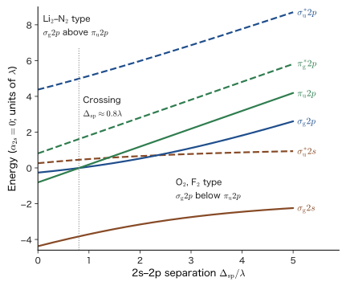
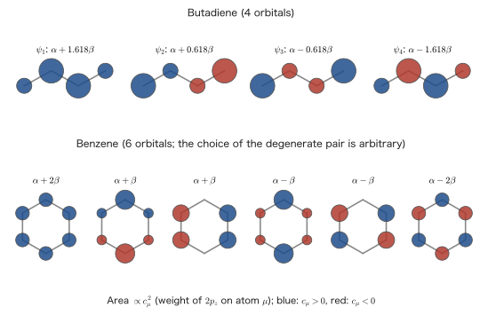
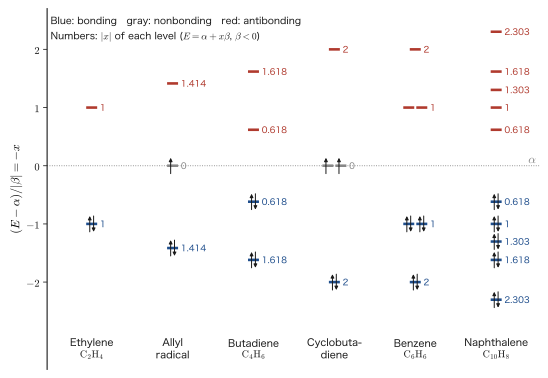
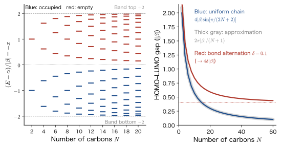

Chapter 40Chemical Bonding (3) — Molecular Orbitals of Homonuclear Diatomic Molecules and the Hückel Method
The nitrogen molecule $\mathrm{N_2}$ and the oxygen molecule $\mathrm{O_2}$, the main components of air, are very similar diatomic molecules, each built from two atoms that sit next to each other in the periodic table. And yet nitrogen reacts with almost nothing, and nothing happens when liquid nitrogen is brought near a magnet. Liquid oxygen (boiling point about 90 K), however, is a pale blue liquid that is attracted to the pole of a magnet. If we join the two atoms of the oxygen molecule with a “double bond” and draw the Lewis structure $\mathrm{O{=}O}$, in which all the electrons are paired, the electron spins should all cancel one another and the molecule should not be attracted to a magnet. What resolves this contradiction is the molecular orbital method (MO method), which we learn in this chapter. We extend the idea of LCAO (linear combination of atomic orbitals) introduced for the hydrogen molecular ion in Chapter 39 to diatomic molecules made of second-period atoms (Li through Ne) and to flat conjugated molecules (ethylene, butadiene, benzene).
In classical physics (AD 03), the bond between atoms could only be given as a spring or as a curve such as the Morse potential (Chapter 20). The depth and position of the curve are numbers fixed by experiment, and such a description cannot answer the questions “Why does $\mathrm{N_2}$ bond more strongly than $\mathrm{O_2}$?” and “Why is $\mathrm{O_2}$ attracted to a magnet?” In quantum mechanics, these can be predicted, as bond order, bond length, and magnetism, from just the superposition of the orbitals of two atoms (constructive and destructive interference of the wave functions) and the rules for filling in the electrons (the Pauli exclusion principle and Hund's rules). The only mathematical tool of this chapter is the eigenvalue problem of matrices from $2\times2$ to $N\times N$.
The Hückel method in the second half of this chapter shows that, when the same idea is applied to the $\pi$ electrons of planar molecules, the matrix elements take the simple form “$\beta$ only between neighboring atoms,” and that the special stability of benzene (aromaticity) and the relation between the length of conjugation and color follow from calculations close to mental arithmetic. Moreover, as the conjugated chain is made longer, the levels of the molecule become a continuous band, and the same matrix gives the electronic states of a crystal. This road “from molecules to crystals” leads to the following Chapter 41 and later chapters (bands of crystals) and to the companion volume Solid-State Physics (AD 06).
- The LCAO combination rules (conservation of number, symmetry, closeness in energy, and overlap) and the meaning of σ, π, g, u. The MO diagram of homonuclear diatomic molecules ($\sigma_{\mathrm g}2s$, $\sigma_{\mathrm u}^{*}2s$, $\sigma_{\mathrm g}2p$, $\sigma_{\mathrm u}^{*}2p$, $\pi_{\mathrm u}2p$, $\pi_{\mathrm g}^{*}2p$) and the two types that arise from $2s$–$2p$ mixing
- How to find the bond order from $\mathrm{H_2}$ to $\mathrm{Ne_2}$, and its relation to bond length, bond energy, and magnetism. The paramagnetism of $\mathrm{O_2}$ (Hund's rules, $\mu_{\mathrm{eff}}=2.83\,\mu_{\mathrm B}$) and the photoelectron spectrum of $\mathrm{N_2}$
- The $2\times2$ problem of heteronuclear diatomic molecules, $E_\pm=\bar\alpha\pm\sqrt{(\Delta/2)^2+\beta^2}$, and the continuous connection between covalent and ionic bonds
- The Hückel method: $\sigma$–$\pi$ separation; the meaning of $\alpha$ and $\beta$ (they are not electron–electron repulsion; sorting out the three meanings of “Coulomb integral”); calculations for ethylene, allyl, butadiene, benzene, and cyclobutadiene; delocalization energy; the $4n+2$ rule; the Frost circle
- The HOMO–LUMO gap and color, the length of conjugation, organic semiconductors, and fullerenes
- The levels of a conjugated chain, $E_j=\alpha+2\beta\cos\dfrac{j\pi}{N+1}$ (for a ring, $\cos\dfrac{2\pi j}{N}$), and the limit to a band; the gap, $4\lvert\beta\rvert\sin\dfrac{\pi}{2(N+1)}$, approaching 0; the Peierls instability (bond alternation) and polyacetylene
Source notes: This chapter supplements material that is not in the original notes. Related notes: Yasuhide Mochizuki, Physics Notes: Quantum Mechanics 3, pp. 81–83.
40.1 MO Diagrams of Homonuclear Diatomic Molecules — Rules for Combining Atomic Orbitals
40.1.1 What are we constructing?
In Chapter 39, we built the molecular orbitals (MOs) of $\mathrm{H_2^+}$ from the linear combination $\psi=c_{\mathrm A}\phi_{\mathrm A}+c_{\mathrm B}\phi_{\mathrm B}$ of the atomic orbitals (AOs) $\phi_{\mathrm A}$, $\phi_{\mathrm B}$ of two hydrogen atoms (the LCAO approximation: linear combination of atomic orbitals). This gave one pair: a bonding orbital of low energy and an antibonding orbital of high energy. In this section, we use the same idea to construct the MO diagrams of the homonuclear diatomic molecules $\mathrm{Li_2},\mathrm{Be_2},\dots,\mathrm{Ne_2}$ of the second-period elements Li through Ne.
An atom of the second period has four orbitals that the valence electrons occupy: $2s$, $2p_x$, $2p_y$, $2p_z$. The two atoms together have eight AOs, and eight MOs are formed from them. The inner $1s$ orbital lies more than an order of magnitude deeper in energy than $2s$ and $2p$ (for example, about 400 eV is needed to strip a $1s$ electron from a nitrogen atom, whereas a valence electron comes off at roughly 10–20 eV). Orbitals that are far apart in energy hardly mix (the rule stated next), so the $1s$ orbital remains confined to each atom and takes no part in the chemical bond. In what follows we consider only the MOs of the valence electrons.
Notation: $\alpha$, $\beta$, $\phi$, $\psi$
In this book, AOs and basis functions are denoted by $\phi_\mu$, MOs by $\psi_i$, and spin orbitals by $\chi_i$. In this chapter, we write the one-electron matrix elements between two AOs as \begin{equation} \alpha_{\mathrm A}\equiv\mel{\phi_{\mathrm A}}{\hat{h}}{\phi_{\mathrm A}},\qquad \beta\equiv\mel{\phi_{\mathrm A}}{\hat{h}}{\phi_{\mathrm B}},\qquad S\equiv\braket{\phi_{\mathrm A}}{\phi_{\mathrm B}} \label{eq:40-def-alpha-beta} \end{equation} Here $\hat{h}$ is the effective Hamiltonian for a single electron (the sum of the kinetic energy and the potential due to the nuclei and the average field of the other electrons. It is the Fock operator $\hat{F}$ of Chapter 36 regarded as a one-electron Hamiltonian. Its matrix representation appeared in the Roothaan–Hall equations of Chapter 37. In the semiempirical discussion of this chapter, we do not calculate the values of $\alpha$ and $\beta$ but fix them to fit experiment), and $\alpha$ is the energy of the AO (the diagonal element), while $\beta$ is the resonance integral (the off-diagonal element). These $\alpha$ and $\beta$ are the conventional symbols of the Hückel method, and they are unrelated to the spin functions $\alpha=\ket{\uparrow}$, $\beta=\ket{\downarrow}$ that represent the orientation of the electron spin (Chapter 23). They are also distinct from the Coulomb integral $U_{ab}$ and the exchange integral $J_{ab}$, which represent the repulsion between two electrons (Chapter 35, Section 35.3); this difference is sorted out in Table 40.5 of Section 40.4. As for the signs of the energies, $\alpha\lt0$ and, for the orientation that forms a bond, $\beta\lt0$.
40.1.2 Combination rules
Which AOs are mixed? This is decided by the following rules. The same rules are used for homonuclear and heteronuclear molecules, for diatomic and polyatomic molecules, and in the Hückel method treated later.
Law 40.1: LCAO combination rules
(i) Conservation of number: $N$ AOs give $N$ MOs.
(ii) Symmetry rule: Only AOs of the same symmetry mix. Between AOs of different symmetry, both the overlap integral and the matrix element of $\hat{h}$ are zero. In a diatomic molecule, the condition is that the symmetry under rotation about the internuclear axis ($m=0$: σ, $\lvert m\rvert=1$: π) is the same and, in a homonuclear molecule, in addition that the parity under inversion (g, u) is the same.
(iii) Energy and overlap rule: When two AOs of the same symmetry mix, the smaller the energy separation, the stronger the mixing, and the larger the overlap (the off-diagonal element $\lvert\beta\rvert$), the wider the gap that opens between the two MOs. AOs that are far apart in energy hardly mix.
A restatement of the symmetry rule in the language of group theory is given in AD 05, Chapter 12, Section 12.8. We will use this rule as it stands in Part VIII as well, when we construct MO diagrams from the $d$ orbitals of a metal ion and the σ and π orbitals of the ligands (the group-theoretical method of Chapter 45).
Rule (i) is a restatement of the fact that if we start from $N$ basis functions and solve the eigenvalue problem of $\hat{h}$, we obtain as many eigenvalues and eigenvectors as the dimension $N$ of the matrix (AD 02, Chapter 12, Section 12.3). Rule (iii) can be verified at once by solving a $2\times2$ problem. The secular equation that couples two AOs of energies $\alpha_{\mathrm A}$ and $\alpha_{\mathrm B}$ (we neglect the overlap integral and set $S=0$) through the off-diagonal element $\beta$ is \begin{equation} \begin{vmatrix}\alpha_{\mathrm A}-E&\beta\\ \beta&\alpha_{\mathrm B}-E\end{vmatrix}=0 \quad\Longrightarrow\quad E_\pm=\frac{\alpha_{\mathrm A}+\alpha_{\mathrm B}}{2}\pm\sqrt{\left(\frac{\alpha_{\mathrm A}-\alpha_{\mathrm B}}{2}\right)^2+\beta^2} \label{eq:40-2x2} \end{equation} (we examine it in detail in Section 40.3). If the two AOs have equal energies ($\alpha_{\mathrm A}=\alpha_{\mathrm B}=\alpha$), then $E_\pm=\alpha\pm\lvert\beta\rvert$: the gap opens to exactly $2\lvert\beta\rvert$, and the mixing is maximal (1:1). If the energy difference $\lvert\alpha_{\mathrm A}-\alpha_{\mathrm B}\rvert$ is sufficiently larger than $\lvert\beta\rvert$, the upper level is merely shifted up by $\beta^2/\lvert\alpha_{\mathrm A}-\alpha_{\mathrm B}\rvert$ and the lower level is shifted down by the same amount ($E_+\approx\alpha_{\mathrm{high}}+\beta^2/\lvert\alpha_{\mathrm A}-\alpha_{\mathrm B}\rvert$, $E_-\approx\alpha_{\mathrm{low}}-\beta^2/\lvert\alpha_{\mathrm A}-\alpha_{\mathrm B}\rvert$; $\alpha_{\mathrm{high}}$ and $\alpha_{\mathrm{low}}$ are the levels of the higher and the lower AO), and the MOs are almost the same as the original AOs. The mixing is weak (this has the same form as the “level repulsion” of second-order perturbation theory in Chapter 27, Section 27.5, and it is also the exact solution of the two-level system in Section 28.3). The reason the inner-shell $1s$ orbital takes no part in bonding is that $\lvert\alpha_{1s}-\alpha_{2s}\rvert$ is larger by orders of magnitude.
Derivation: Why the symmetry rule holds (rotation about the internuclear axis)
Take the internuclear axis as the $z$ axis, and let $\varphi$ be the azimuthal angle about the $z$ axis (cylindrical coordinates $(\rho,\varphi,z)$). Since the potential of a diatomic molecule does not change under rotation about the $z$ axis, the operator of the $z$ component of the angular momentum, $\hat{L}_z=-i\hbar\,\partial/\partial\varphi$, commutes with $\hat{h}$ ($\comm{\hat{h}}{\hat{L}_z}=0$). Therefore $\hat{h}$ and $\hat{L}_z$ can be diagonalized simultaneously, and the MOs can be taken to be functions with the $\varphi$ dependence $e^{im\varphi}$ ($m=0,\pm1,\pm2,\dots$). The MOs corresponding to $\lvert m\rvert=0,1,2$ are called σ, π, and δ orbitals, respectively (the Greek letters corresponding to the atomic s, p, d). Among the AOs, $2s$ and $2p_z$ have $m=0$, and $2p_x\pm i\,2p_y$ (the spherical harmonics $Y_1^{\pm1}\propto\sin\theta\,e^{\pm i\varphi}$, Chapter 22) have $m=\pm1$. The real $2p_x$ and $2p_y$ are linear combinations of $m=+1$ and $m=-1$, and the two have equal energies ($\hat{h}$ is invariant under the reflection $\varphi\to-\varphi$), so $2p_x$ and $2p_y$ form a doubly degenerate π orbital.
For two functions with different $m$, $\chi_1\propto e^{im\varphi}$ and $\chi_2\propto e^{im'\varphi}$, if we take out only the $\varphi$ integral of the integral over the volume element $\rho\,\dd\rho\,\dd\varphi\,\dd z$, we obtain $$\int_0^{2\pi}e^{-im\varphi}\,e^{im'\varphi}\dd\varphi=2\pi\,\delta_{mm'}$$ so it vanishes if $m\ne m'$. Since $\hat{h}$ does not act on $\varphi$ ($\hat{h}\chi_2\propto e^{im'\varphi}$ remains as it is), the matrix element $\mel{\chi_1}{\hat{h}}{\chi_2}$ is also zero for the same reason. That is, AOs of σ type ($2s$, $2p_z$) and AOs of π type ($2p_x$, $2p_y$) never mix, whether they are on the same atom or on different atoms.
∎
Definition 40.1: g and u (parity under inversion)
A homonuclear diatomic molecule has symmetry under the inversion $\hat{\imath}:\bm{r}\to-\bm{r}$ about the midpoint of the two nuclei. Since $\hat{h}$ and $\hat{\imath}$ commute, the MOs can be chosen to satisfy $\psi(-\bm{r})=\pm\psi(\bm{r})$, with one or the other of the two signs. The case $+$ is called g (gerade, German for “even”) and the case $-$ is called u (ungerade, “odd”), and the label is attached at the lower right of σ or π ($\sigma_{\mathrm g}$, $\sigma_{\mathrm u}$, $\pi_{\mathrm g}$, $\pi_{\mathrm u}$). By convention, antibonding MOs are marked with $*$ at the upper right ($\sigma_{\mathrm u}^{*}$, $\pi_{\mathrm g}^{*}$). Since a heteronuclear diatomic molecule has no inversion symmetry, there is no distinction between g and u.
40.1.3 The eight valence MOs
Place nucleus A at $z=-R/2$ and nucleus B at $z=+R/2$. The sign of the $2p_z$ orbital of each atom is taken so that the positive direction of the $z$ axis is positive for both ($\phi_{2p_z}\propto z\,f(r)$). Since inversion interchanges the two nuclei, the behavior of the AOs under inversion is as follows ($(\hat{\imath}\phi)(\bm{r})=\phi(-\bm{r})$).
Derivation: Signs of the AOs under inversion
Let the AO centered on nucleus A be $\phi^{\mathrm A}(\bm{r})=F(\bm{r}-\bm{R}_{\mathrm A})$ and the one centered on nucleus B be $\phi^{\mathrm B}(\bm{r})=F(\bm{r}-\bm{R}_{\mathrm B})$ ($\bm{R}_{\mathrm A}=-\bm{R}_{\mathrm B}$).
$2s$: $F$ is a function of $\lvert\bm{r}\rvert$ only. $(\hat{\imath}\phi_{2s}^{\mathrm A})(\bm{r})=F(\lvert-\bm{r}-\bm{R}_{\mathrm A}\rvert)=F(\lvert\bm{r}+\bm{R}_{\mathrm A}\rvert)=F(\lvert\bm{r}-\bm{R}_{\mathrm B}\rvert)=\phi_{2s}^{\mathrm B}(\bm{r})$. Hence $\hat{\imath}\phi_{2s}^{\mathrm A}=\phi_{2s}^{\mathrm B}$.
$2p_z$: $F(\bm{r})=z\,f(\lvert\bm{r}\rvert)$ is an odd function. $(\hat{\imath}\phi_{2p_z}^{\mathrm A})(\bm{r})=(-z-z_{\mathrm A})f(\lvert\bm{r}+\bm{R}_{\mathrm A}\rvert)=-(z-z_{\mathrm B})f(\lvert\bm{r}-\bm{R}_{\mathrm B}\rvert)=-\phi_{2p_z}^{\mathrm B}(\bm{r})$ (we used $z_{\mathrm A}=-z_{\mathrm B}$). Hence $\hat{\imath}\phi_{2p_z}^{\mathrm A}=-\phi_{2p_z}^{\mathrm B}$. Similarly, for $2p_x$ we have $\hat{\imath}\phi_{2p_x}^{\mathrm A}=-\phi_{2p_x}^{\mathrm B}$.
Therefore, the sum and the difference of two AOs are each either g or u, as follows:
$$\hat{\imath}\,(\phi_{2s}^{\mathrm A}\pm\phi_{2s}^{\mathrm B})=\pm(\phi_{2s}^{\mathrm A}\pm\phi_{2s}^{\mathrm B}),\qquad
\hat{\imath}\,(\phi_{2p_z}^{\mathrm A}\mp\phi_{2p_z}^{\mathrm B})=\pm(\phi_{2p_z}^{\mathrm A}\mp\phi_{2p_z}^{\mathrm B}),\qquad
\hat{\imath}\,(\phi_{2p_x}^{\mathrm A}\pm\phi_{2p_x}^{\mathrm B})=\mp(\phi_{2p_x}^{\mathrm A}\pm\phi_{2p_x}^{\mathrm B}).$$
∎
Let us organize the results according to bonding and antibonding character. The $2p_z$ overlap integral is negative for two $2p_z$ orbitals oriented in the same direction, because the positive lobe of A faces the negative lobe of B. Therefore, when treating σ-type $p$ orbitals, we use AOs whose signs have been re-chosen as \begin{equation} \phi_{p\sigma}^{\mathrm A}\equiv\phi_{2p_z}^{\mathrm A},\qquad\phi_{p\sigma}^{\mathrm B}\equiv-\phi_{2p_z}^{\mathrm B} \label{eq:40-psigma} \end{equation} so that the two lobes face each other (the overlap integral becomes positive). Then $\hat{\imath}\phi_{p\sigma}^{\mathrm A}=+\phi_{p\sigma}^{\mathrm B}$, and these can be treated exactly like the $2s$ orbitals. For $2p_x$ and $2p_y$ (π type), the two lobes lie side by side, so the overlap integral is positive with the signs left unchanged, both orbitals being oriented in the same direction.
| MO | LCAO ($2p$ orbitals with the positive direction of the $z$ axis taken as positive for both) | Inversion | Bonding / antibonding |
|---|---|---|---|
| $\sigma_{\mathrm g}2s$ | $c_{+}\,(\phi_{2s}^{\mathrm A}+\phi_{2s}^{\mathrm B})$ | g | Bonding |
| $\sigma_{\mathrm u}^{*}2s$ | $c_{-}\,(\phi_{2s}^{\mathrm A}-\phi_{2s}^{\mathrm B})$ | u | Antibonding |
| $\sigma_{\mathrm g}2p$ | $c_{+}\,(\phi_{2p_z}^{\mathrm A}-\phi_{2p_z}^{\mathrm B})=c_{+}\,(\phi_{p\sigma}^{\mathrm A}+\phi_{p\sigma}^{\mathrm B})$ | g | Bonding |
| $\sigma_{\mathrm u}^{*}2p$ | $c_{-}\,(\phi_{2p_z}^{\mathrm A}+\phi_{2p_z}^{\mathrm B})=c_{-}\,(\phi_{p\sigma}^{\mathrm A}-\phi_{p\sigma}^{\mathrm B})$ | u | Antibonding |
| $\pi_{\mathrm u}2p$ (doubly degenerate in $x$ and $y$) | $c_{+}\,(\phi_{2p_x}^{\mathrm A}+\phi_{2p_x}^{\mathrm B})$, $c_{+}\,(\phi_{2p_y}^{\mathrm A}+\phi_{2p_y}^{\mathrm B})$ | u | Bonding |
| $\pi_{\mathrm g}^{*}2p$ (doubly degenerate in $x$ and $y$) | $c_{-}\,(\phi_{2p_x}^{\mathrm A}-\phi_{2p_x}^{\mathrm B})$, $c_{-}\,(\phi_{2p_y}^{\mathrm A}-\phi_{2p_y}^{\mathrm B})$ | g | Antibonding |
The normalization constants in Table 40.1 are $c_\pm=1/\sqrt{2(1\pm S)}$ ($c_+$ for bonding and $c_-$ for antibonding; $S$ is the overlap integral of the AOs after the signs have been re-chosen; Chapter 39). A rule of thumb for telling a bonding MO from an antibonding MO is whether a new nodal plane (a plane on which the wave function vanishes) appears between the nuclei (Figure 40.1). In a bonding orbital, a region of the same sign extends between the nuclei and the electron accumulates between them; an antibonding orbital has a node on the plane between the nuclei, and the electron is expelled from the region between the nuclei. Note that the bonding σ orbitals are g whereas the bonding π orbitals are u, so the two are reversed. The reason is that the subscripts g and u are determined not by “whether the orbital is bonding or antibonding” but by “whether the sign changes under inversion.”
Intuition: Overlap in σ bonds and π bonds
σ-type overlap is overlap in which the lobes of the orbitals face each other “tip to tip” (head-on) on the internuclear axis, and $\lvert\beta\rvert$ is large. π-type overlap is overlap in which the lobes stand “shoulder to shoulder” (side-on) on both sides of the internuclear axis, and $\lvert\beta\rvert$ is smaller than for σ. Using Slater-type $2p$ orbitals (orbital exponent $\zeta=1.95$, the value for nitrogen from Slater's rules) and integrating the overlap integral numerically at the $\mathrm{N_2}$ bond length $R=109.8\ \mathrm{pm}$, we obtain $S_{zz}=-0.32$ for $2p_z$ orbitals with the same orientation (the sign is negative, as stated above; for the reoriented $\phi_{p\sigma}$ it is $+0.32$), and $S_{xx}=+0.28$ for $2p_x$ orbitals. Judging by the magnitude of $S$ alone, the two are not very different, but the matrix element $\beta$ of $\hat{h}$ is much larger for the σ type because the shapes of the orbitals differ (in the model of Section 40.1.4 we take $\lvert\beta_{pp}\rvert:\lvert\beta_{\pi}\rvert\approx4:1$). As a result, in the MOs built from 2s and 2p, even among those derived from 2p, the basic pattern is that $\sigma_{\mathrm g}2p$ is more stable than $\pi_{\mathrm u}2p$, and $\sigma_{\mathrm u}^{*}2p$ is more unstable than $\pi_{\mathrm g}^{*}2p$.
Example 40.1: Determining the symmetry of an MO (σ or π, g or u) and whether it is bonding or antibonding
In a homonuclear diatomic molecule with nucleus A placed at $z=-R/2$ and nucleus B at $z=+R/2$ ($R$ is the internuclear distance), consider the following three MOs ($c$ is a normalization constant). On both atoms, $2p_z$ is taken positive in the positive direction of the $z$ axis and $2p_x$ positive in the positive direction of the $x$ axis. (a) $\psi_{\mathrm a}=c\,(\phi_{2p_z}^{\mathrm A}+\phi_{2p_z}^{\mathrm B})$, (b) $\psi_{\mathrm b}=c\,(\phi_{2p_x}^{\mathrm A}-\phi_{2p_x}^{\mathrm B})$, (c) $\psi_{\mathrm c}=c\,(\phi_{2s}^{\mathrm A}-\phi_{2s}^{\mathrm B})$. For each, determine the symmetry about the internuclear axis (σ or π), the parity under inversion (g or u), and whether there is a nodal plane between the nuclei (bonding or antibonding), and give it the name used in Table 40.1.
Solution. The signs of the AOs under inversion are $\hat{\imath}\phi_{2s}^{\mathrm A}=\phi_{2s}^{\mathrm B}$, $\hat{\imath}\phi_{2p_z}^{\mathrm A}=-\phi_{2p_z}^{\mathrm B}$, $\hat{\imath}\phi_{2p_x}^{\mathrm A}=-\phi_{2p_x}^{\mathrm B}$ (the same holds with A and B interchanged). The midpoint between the nuclei is at $z=0$, and the values of the AOs on the plane through it (the midplane) are as follows: for $2s$, $\phi_{2s}^{\mathrm A}=\phi_{2s}^{\mathrm B}$; for $2p_x$, $\phi_{2p_x}^{\mathrm A}=\phi_{2p_x}^{\mathrm B}$ (both are $x\,f(r)$, with the same sign); and for $2p_z$, $\phi_{2p_z}^{\mathrm A}\propto(z+R/2)f=+\tfrac{R}{2}f$ and $\phi_{2p_z}^{\mathrm B}\propto(z-R/2)f=-\tfrac{R}{2}f$ (opposite in sign to each other).
(a) $2p_z$ is invariant under rotation about the $z$ axis ($m=0$), so it is σ. Under inversion, $\hat{\imath}\psi_{\mathrm a}=c\,(-\phi_{2p_z}^{\mathrm B}-\phi_{2p_z}^{\mathrm A})=-\psi_{\mathrm a}$, so the sign changes and it is u. On the midplane, $\phi_{2p_z}^{\mathrm A}+\phi_{2p_z}^{\mathrm B}=0$, so a nodal plane forms between the nuclei. Therefore it is antibonding, and it is $\sigma_{\mathrm u}^{*}2p$.
(b) $2p_x$ is a linear combination of $m=\pm1$, so it is π. Since $\hat{\imath}\psi_{\mathrm b}=c\,(-\phi_{2p_x}^{\mathrm B}+\phi_{2p_x}^{\mathrm A})=+\psi_{\mathrm b}$, it is g. On the midplane, $\phi_{2p_x}^{\mathrm A}-\phi_{2p_x}^{\mathrm B}=0$, so in addition to the nodal plane containing the axis ($x=0$) there is also a nodal plane between the nuclei. Therefore it is antibonding, and it is $\pi_{\mathrm g}^{*}2p$.
(c) $2s$ has $m=0$, so it is σ. Since $\hat{\imath}\psi_{\mathrm c}=c\,(\phi_{2s}^{\mathrm B}-\phi_{2s}^{\mathrm A})=-\psi_{\mathrm c}$, it is u. On the midplane, $\phi_{2s}^{\mathrm A}-\phi_{2s}^{\mathrm B}=0$, so there is a nodal plane between the nuclei; hence it is antibonding, and it is $\sigma_{\mathrm u}^{*}2s$.
To summarize, (a), (b), and (c) are $\sigma_{\mathrm u}^{*}2p$, $\pi_{\mathrm g}^{*}2p$, and $\sigma_{\mathrm u}^{*}2s$, respectively, in agreement with Table 40.1. Every antibonding orbital has a node in the plane between the nuclei. On the other hand, g and u are a separate property, determined by whether the sign changes under inversion; as in $\sigma_{\mathrm u}^{*}$ and $\pi_{\mathrm g}^{*}$, the g or u character of antibonding orbitals is opposite for σ and π.
Related simulator: Overlap integral (bring two AOs closer together and see how the magnitude and sign of the σ, π, and δ overlaps change)
40.1.4 2s–2p mixing and the two types of MO diagram
An MO diagram arranges the eight MOs in order of energy. The way they are arranged differs between the first half and the second half of the second period. Naively, (a) the two derived from $2s$ ($\sigma_{\mathrm g}2s$, $\sigma_{\mathrm u}^{*}2s$) lie low and the six derived from $2p$ lie high, and (b) among those derived from $2p$, the σ orbitals, whose overlap is large, split widely, so that $\sigma_{\mathrm g}2p$ is the lowest and $\sigma_{\mathrm u}^{*}2p$ the highest, with the π orbitals lying between them. From (a) and (b), the order $$\sigma_{\mathrm g}2s\lt\sigma_{\mathrm u}^{*}2s\lt\sigma_{\mathrm g}2p\lt\pi_{\mathrm u}2p\lt\pi_{\mathrm g}^{*}2p\lt\sigma_{\mathrm u}^{*}2p$$ is expected. This is in fact the order for $\mathrm{O_2}$ and $\mathrm{F_2}$ (and their companion $\mathrm{Ne_2}$) (Figure 40.2 (b)). For $\mathrm{Li_2}$ through $\mathrm{N_2}$, however, the order of $\sigma_{\mathrm g}2p$ and $\pi_{\mathrm u}2p$ is interchanged (Figure 40.2 (a)). The cause is the mixing of $2s$ and $2p$ that Law 40.1 (ii) allows.
$\sigma_{\mathrm g}2s$ and $\sigma_{\mathrm g}2p$ are both σ and g, so they satisfy (ii) of Law 40.1. When two levels of the same symmetry are connected by an off-diagonal element, the upper level is pushed up and the lower level is pushed down (level repulsion, Eq. \eqref{eq:40-2x2}). The same holds for $\sigma_{\mathrm u}^{*}2s$ and $\sigma_{\mathrm u}^{*}2p$. For the π MOs, however, there is no partner of the same symmetry (π and u, or π and g), because $2s$ is of σ type, so this mutual push does not occur. The effect of $2s$–$2p$ mixing is that $\sigma_{\mathrm g}2s$ is lowered, $\sigma_{\mathrm g}2p$ is raised, $\sigma_{\mathrm u}^{*}2s$ is raised, and $\sigma_{\mathrm u}^{*}2p$ is lowered (the arrows in Figure 40.2 (a)). If the mixing is strong, $\sigma_{\mathrm g}2p$ is lifted and overtakes $\pi_{\mathrm u}2p$.
The strength of the mixing is determined by the energy difference $\Delta_{sp}=\alpha_{2p}-\alpha_{2s}$ between the $2s$ and $2p$ AOs. As the atomic number increases, the nuclear charge increases and the $2s$ orbital is attracted more strongly than the $2p$ ($2s$ penetrates close to the nucleus; this is penetration, Chapter 18), so $\Delta_{sp}$ becomes larger. The $2s$–$2p$ gap of the lithium atom is only about 2 eV (the photon energy corresponding to the wavelength 671 nm of the red resonance line: $hc/(671\ \mathrm{nm})=1.85\ \mathrm{eV}$), but for fluorine and neon it exceeds 20 eV. In the first half, where $\Delta_{sp}$ is small ($\mathrm{Li_2}$–$\mathrm{N_2}$), the mixing is strong; in the second half, where it is large ($\mathrm{O_2}$, $\mathrm{F_2}$), the mixing is weak.
Derivation: The condition for $\sigma_{\mathrm g}2p$ and $\pi_{\mathrm u}2p$ to interchange (four-level model)
Let the $2s$ level of each atom be $\alpha_s=0$ and the $2p$ level be $\alpha_p=\Delta_{sp}\;(\gt0)$. Neglecting the overlap integrals, we consider only the following matrix elements (since we use the reoriented $\phi_{p\sigma}$ (Eq. \eqref{eq:40-psigma}), all of them are negative): $\beta_{ss}=\mel{s_{\mathrm A}}{\hat{h}}{s_{\mathrm B}}$, $\beta_{sp}=\mel{s_{\mathrm A}}{\hat{h}}{p\sigma_{\mathrm B}}=\mel{s_{\mathrm B}}{\hat{h}}{p\sigma_{\mathrm A}}$, $\beta_{pp}=\mel{p\sigma_{\mathrm A}}{\hat{h}}{p\sigma_{\mathrm B}}$, $\beta_{\pi}=\mel{p_{x\mathrm A}}{\hat{h}}{p_{x\mathrm B}}$. The matrix element $\mel{s_{\mathrm A}}{\hat{h}}{p\sigma_{\mathrm A}}$ between $s$ and $p\sigma$ on the same atom is a small term due to the potential of the nucleus of the other atom, so we set it to 0 in the two-center approximation (the approximation that keeps only the elements between the two atoms forming the bond). (Law 40.1 (ii) does not forbid the mixing of $s$ and $p\sigma$, since both have $m=0$ and lie on the same atom. Nor is inversion, which is the operation that interchanges the orbitals of atom A and those of atom B, a reason for setting this matrix element to 0. The effect of $s$ and $p\sigma$ mixing on the same atom corresponds to the $sp$ hybridization of each atom, and we neglect it here.)
The matrix of $\hat{h}$ between the two functions of g symmetry, $s_{\mathrm g}=(s_{\mathrm A}+s_{\mathrm B})/\sqrt2$ and $p_{\mathrm g}=(p\sigma_{\mathrm A}+p\sigma_{\mathrm B})/\sqrt2$, is given by
$$\mel{s_{\mathrm g}}{\hat{h}}{s_{\mathrm g}}=\alpha_s+\beta_{ss},\quad\mel{p_{\mathrm g}}{\hat{h}}{p_{\mathrm g}}=\alpha_p+\beta_{pp},\quad\mel{s_{\mathrm g}}{\hat{h}}{p_{\mathrm g}}=\tfrac12\bigl(\mel{s_{\mathrm A}}{\hat{h}}{p\sigma_{\mathrm B}}+\mel{s_{\mathrm B}}{\hat{h}}{p\sigma_{\mathrm A}}\bigr)=\beta_{sp}$$
For the functions of u symmetry, $s_{\mathrm u}=(s_{\mathrm A}-s_{\mathrm B})/\sqrt2$ and $p_{\mathrm u}=(p\sigma_{\mathrm A}-p\sigma_{\mathrm B})/\sqrt2$, the diagonal elements are $\alpha_s-\beta_{ss}$ and $\alpha_p-\beta_{pp}$, and the off-diagonal element is $-\beta_{sp}$. The energies of the π functions $\pi_{\mathrm u}$ and $\pi_{\mathrm g}^{*}$ are $\alpha_p+\beta_{\pi}$ and $\alpha_p-\beta_{\pi}$, since there is no mixing.
$\sigma_{\mathrm g}2p$ is the higher eigenvalue of the g $2\times2$ matrix. The condition for it to coincide with the energy $E_\pi=\alpha_p+\beta_\pi$ of $\pi_{\mathrm u}2p$ is obtained by substituting $E=E_\pi$ into the secular determinant:
$$(\alpha_s+\beta_{ss}-E_\pi)(\alpha_p+\beta_{pp}-E_\pi)-\beta_{sp}^2=0
\;\Longleftrightarrow\;
-(\Delta_{sp}-\beta_{ss}+\beta_\pi)(\beta_{pp}-\beta_\pi)=\beta_{sp}^2$$
That is,
\begin{equation}
\Delta_c=\frac{\beta_{sp}^2}{\beta_\pi-\beta_{pp}}+\beta_{ss}-\beta_\pi \label{eq:40-crossing}
\end{equation}
If $\Delta_{sp}\gt\Delta_c$, then $\sigma_{\mathrm g}2p$ lies below $\pi_{\mathrm u}2p$ (O$_2$ and F$_2$ type); if $\Delta_{sp}\lt\Delta_c$, it lies above (Li$_2$ through N$_2$ type).
To get a feel for the magnitudes, we insert the ratio $\lvert\beta_{ss}\rvert:\lvert\beta_{sp}\rvert:\lvert\beta_{pp}\rvert:\lvert\beta_\pi\rvert=1.40:1.84:3.24:0.81$ used in the tight-binding approximation for solids (an empirical law proposed by W. A. Harrison for the tight-binding approximation of solids (Chapter 41); the unit is the common $\lambda=\hbar^2/(m_{\mathrm e}d^2)$, where $d$ is the bond length). Then Eq. \eqref{eq:40-crossing} becomes $\Delta_c=1.84^2/(3.24-0.81)\,\lambda-1.40\lambda+0.81\lambda=0.80\,\lambda$. Since $\hbar^2/m_{\mathrm e}=7.62\ \mathrm{eV}\,\text{Å}^2$, for $\mathrm{N_2}$ ($d=109.8\ \mathrm{pm}$) we have $\lambda\approx6.3\ \mathrm{eV}$ and $\Delta_c\approx5\ \mathrm{eV}$. Figure 40.3 plots the six levels in this model as functions of $\Delta_{sp}$.
However, this model neglects the overlap integrals and the electron–electron repulsion, and the ratio of the $\beta$ values is also borrowed from an empirical law for solids, so it does not quantitatively predict the position of the crossing. For example, the $2s$–$2p$ gap of the nitrogen atom is about 10 eV in terms of Hartree–Fock orbital energies, which is larger than $\Delta_c$, so this model as it stands would classify even $\mathrm{N_2}$ as $\mathrm{O_2}$ type. Also, the position of $\sigma_{\mathrm u}^{*}2s$ does not agree with the ordering in Figure 40.2 (in this model, when $\Delta_{sp}\lt2.3\lambda$, $\sigma_{\mathrm u}^{*}2s$ lies above $\sigma_{\mathrm g}2p$). All this model shows is the mechanism by which “when $\Delta_{sp}$ is large, $\sigma_{\mathrm g}2p$ lies below $\pi_{\mathrm u}2p$.”
∎

Example 40.2: Numerical example of the four-level model—the order of $\sigma_{\mathrm g}2p$ and $\pi_{\mathrm u}2p$
In the four-level model, let $\beta_{ss}=-1.40\lambda$, $\beta_{sp}=-1.84\lambda$, $\beta_{pp}=-3.24\lambda$, $\beta_\pi=-0.81\lambda$, and $\alpha_s=0$. For each of (1) $\Delta_{sp}=0.4\lambda$ and (2) $\Delta_{sp}=2\lambda$, find the two eigenvalues of the g $2\times2$ matrix and the energy of $\pi_{\mathrm u}2p$, and state whether $\sigma_{\mathrm g}2p$ lies above or below $\pi_{\mathrm u}2p$. (3) Taking $\lambda=6.3\ \mathrm{eV}$, express the spacing between the two in eV.
Solution. The g matrix is $\begin{pmatrix}\beta_{ss}&\beta_{sp}\\ \beta_{sp}&\Delta_{sp}+\beta_{pp}\end{pmatrix}$, and with the trace $T$ and the determinant $D$ the eigenvalues are $E=\bigl(T\pm\sqrt{T^2-4D}\bigr)/2$. The higher one is $\sigma_{\mathrm g}2p$ and the lower one is $\sigma_{\mathrm g}2s$. For $\pi_{\mathrm u}2p$ there is no mixing, so $E_\pi=\Delta_{sp}+\beta_\pi$. The unit of energy is $\lambda$.
(1) $\Delta_{sp}=0.4$: the matrix is $\begin{pmatrix}-1.40&-1.84\\-1.84&-2.84\end{pmatrix}$. $T=-4.24$, $D=(-1.40)(-2.84)-(-1.84)^2=3.976-3.3856=0.5904$, $\sqrt{T^2-4D}=\sqrt{17.9776-2.3616}=3.952$. $E=(-4.24\pm3.952)/2=-0.144,\ -4.096$. $E_\pi=0.4-0.81=-0.41$. $\sigma_{\mathrm g}2p$ ($-0.144$) lies above $\pi_{\mathrm u}2p$ ($-0.41$) ($\mathrm{Li_2}$ through $\mathrm{N_2}$ type).
(2) $\Delta_{sp}=2$: the matrix is $\begin{pmatrix}-1.40&-1.84\\-1.84&-1.24\end{pmatrix}$. $T=-2.64$, $D=1.736-3.3856=-1.6496$, $\sqrt{T^2-4D}=\sqrt{6.9696+6.5984}=3.683$. $E=(-2.64\pm3.683)/2=+0.522,\ -3.162$. $E_\pi=2-0.81=+1.19$. $\sigma_{\mathrm g}2p$ ($+0.522$) lies below $\pi_{\mathrm u}2p$ ($+1.19$) ($\mathrm{O_2}$ and $\mathrm{F_2}$ type).
(3) In (1), $-0.144-(-0.41)=+0.266\lambda\approx+1.7\ \mathrm{eV}$ ($\sigma_{\mathrm g}2p$ above); in (2), $0.522-1.19=-0.668\lambda\approx-4.2\ \mathrm{eV}$ ($\sigma_{\mathrm g}2p$ below). The boundary at which the order reverses is $\Delta_c=0.80\lambda$ of Eq. \eqref{eq:40-crossing}; (1) is smaller than $\Delta_c$ and (2) is larger, which agrees with the conclusions above.
Caution: The order of levels in an MO diagram is a product of approximation
The ordering of levels in Figures 40.2 and 40.3 is a qualitative road map based on linear combinations of AOs. What determines the actual order of the levels is many-electron calculations that include the repulsion between the electrons, together with experiment (the photoelectron spectra in the next section). In particular, $\sigma_{\mathrm g}2p$ and $\pi_{\mathrm u}2p$ lie close together in the middle of the second period, and their order interchanges in a delicate way. As described in the next section, if the Hartree–Fock orbital energies are read directly with Koopmans' theorem, the order of these two for $\mathrm{N_2}$ is predicted to be opposite to experiment. The point of this section is that “the mechanism of the change of order is the level repulsion between the $2s$ and $2p$ levels of the same symmetry.”
40.1.5 Filling in the electrons and bond order
Once the MO levels are determined, we fill in the valence electrons starting from the lowest level. We use the following three rules.
- Aufbau principle: Fill the MOs in order, starting from the one with the lowest energy.
- Pauli exclusion principle: One MO (spatial orbital) can hold at most two electrons, with opposite spins (Chapter 33, Section 33.5).
- Hund's rules: When electrons are placed in degenerate orbitals (here, the two $\pi_{\mathrm u}2p$ orbitals and the two $\pi_{\mathrm g}^{*}2p$ orbitals), first align the spins in parallel and put one electron in each separate orbital (Chapter 34, Section 34.6). Putting two electrons in the same spatial orbital makes the electron–electron repulsion larger.
Definition 40.2: Bond order
From the number $n_{\mathrm b}$ of electrons in bonding MOs and the number $n_{\mathrm a}$ of electrons in antibonding MOs, \begin{equation} b=\frac{n_{\mathrm b}-n_{\mathrm a}}{2} \label{eq:40-bo} \end{equation} is called the bond order. The inner-shell $\sigma_{\mathrm g}1s$ and $\sigma_{\mathrm u}^{*}1s$ are filled in both the bonding and the antibonding orbital and do not contribute to $n_{\mathrm b}-n_{\mathrm a}$, so it suffices to count only the valence electrons.
The meaning of Eq. \eqref{eq:40-bo} is as follows. One pair (two) of electrons in a bonding orbital joins the two atoms with one covalent bond (the shared electron pair of the valence bond method, Chapter 38). One pair in an antibonding orbital cancels that effect. Therefore $(n_{\mathrm b}-n_{\mathrm a})/2$ pairs is the net number of bonds, and 1 corresponds to a single bond, 2 to a double bond, and 3 to a triple bond. Half-integers (0.5, 2.5, etc.) appear for molecules and ions with an odd number of electrons. The larger the bond order, the shorter and stronger the bond, and if it is 0 no bond forms (the two atoms are more stable when separated). The above is a rough guide for the case in which the overlap of the AOs is small and the effects of $\lvert\beta\rvert$ and $S$ are symmetric, and the magnitude of the bond energy itself is not determined by the bond order alone, as the table in the next section shows.
Example 40.3: Electron configurations and bond orders of $\mathrm{H_2^+}$, $\mathrm{H_2}$, $\mathrm{He_2^+}$, and $\mathrm{He_2}$
In hydrogen and helium, the $1s$ orbitals give $\sigma_{\mathrm g}1s$ (bonding) and $\sigma_{\mathrm u}^{*}1s$ (antibonding). Fill these with electrons, and find the electron configurations and bond orders of the four kinds of diatomic molecules (ions).
Solution. The numbers of electrons are 1, 2, 3, and 4, respectively. We fill from the lower $\sigma_{\mathrm g}1s$.
• $\mathrm{H_2^+}$ (one electron): $(\sigma_{\mathrm g}1s)^1$. $n_{\mathrm b}=1$ and $n_{\mathrm a}=0$, so $b=(1-0)/2=0.5$.
• $\mathrm{H_2}$ (two electrons): $(\sigma_{\mathrm g}1s)^2$. $b=(2-0)/2=1$ (single bond).
• $\mathrm{He_2^+}$ (three electrons): $(\sigma_{\mathrm g}1s)^2(\sigma_{\mathrm u}^{*}1s)^1$. $b=(2-1)/2=0.5$.
• $\mathrm{He_2}$ (four electrons): $(\sigma_{\mathrm g}1s)^2(\sigma_{\mathrm u}^{*}1s)^2$. $b=(2-2)/2=0$.
Therefore $\mathrm{H_2}$ is bound most strongly, and $\mathrm{H_2^+}$ and $\mathrm{He_2^+}$ have weak bonds with bond order 0.5 (indeed, $\mathrm{He_2^+}$ has a dissociation energy of about 2.4 eV and is produced, for example, in gas discharges). $\mathrm{He_2}$ has bond order 0 and forms no chemical bond: this explains why $\mathrm{He}$ is monatomic. (For $\mathrm{He_2}$ at extremely low temperatures, an extremely weakly bound state held together by the van der Waals force has been observed experimentally, but its bond energy is about $10^{-7}\ \mathrm{eV}$, and it is not a chemical bond.)
40.2 From $\mathrm{H_2}$ to $\mathrm{Ne_2}$ — Bond Order, Bond Length, and Magnetism
40.2.1 Overview of the second-period homonuclear diatomic molecules
If we fill the MO diagram of the previous section with valence electrons, adding two at a time, the bond order and magnetism from $\mathrm{Li_2}$ to $\mathrm{Ne_2}$ are determined. The results are shown in Table 40.2, together with the measured bond length $r_{\mathrm e}$ and the strength of the bond (the dissociation energy $D_0$, the energy required to split the molecule from its ground vibrational state into two neutral atoms). $\mathrm{H_2}$ and $\mathrm{He_2}$ are built from $1s$ (the entry in the “Valence electrons” column is the total number of electrons of that molecule). The electron configuration in each row from $\mathrm{Li_2}$ onward is the configuration of the previous row plus the electrons in the “Added orbitals” column (inner shells are omitted. $\mathrm{Li_2}$ through $\mathrm{N_2}$ are filled in the order of Figure 40.2 (a), and $\mathrm{O_2}$ and $\mathrm{F_2}$ in the order of (b). For $\mathrm{O_2}$ the electrons are added to the configuration of $\mathrm{N_2}$, and for $\mathrm{Ne_2}$ to the configuration of $\mathrm{F_2}$).
| Molecule | Valence electrons | Added orbitals | Bond order $b$ | Unpaired electrons | $r_{\mathrm e}$ (pm) | $D_0$ (eV) | Ground-state term |
|---|---|---|---|---|---|---|---|
| $\mathrm{H_2}$ | 2 | $(\sigma_{\mathrm g}1s)^2$ | 1 | 0 | 74.1 | 4.48 | ${}^1\Sigma_{\mathrm g}^{+}$ |
| $\mathrm{He_2}$ | 4 | $(\sigma_{\mathrm u}^{*}1s)^2$ (added to the $\mathrm{H_2}$ configuration) | 0 | 0 | — | about $10^{-7}$ (van der Waals force) | ${}^1\Sigma_{\mathrm g}^{+}$ |
| $\mathrm{Li_2}$ | 2 | $(\sigma_{\mathrm g}2s)^2$ | 1 | 0 | 267 | about 1.1 | ${}^1\Sigma_{\mathrm g}^{+}$ |
| $\mathrm{Be_2}$ | 4 | $(\sigma_{\mathrm u}^{*}2s)^2$ | 0 | 0 | 245 | about 0.1 | ${}^1\Sigma_{\mathrm g}^{+}$ |
| $\mathrm{B_2}$ | 6 | $(\pi_{\mathrm u}2p)^2$ | 1 | 2 | 159 | about 3 | ${}^3\Sigma_{\mathrm g}^{-}$ |
| $\mathrm{C_2}$ | 8 | adding $(\pi_{\mathrm u}2p)^2$ to make $(\pi_{\mathrm u}2p)^4$ | 2 | 0 | 124 | about 6.2 | ${}^1\Sigma_{\mathrm g}^{+}$ |
| $\mathrm{N_2}$ | 10 | $(\sigma_{\mathrm g}2p)^2$ | 3 | 0 | 109.8 | 9.76 | ${}^1\Sigma_{\mathrm g}^{+}$ |
| $\mathrm{O_2}$ | 12 | $(\pi_{\mathrm g}^{*}2p)^2$ (in the order (b), $\sigma_{\mathrm g}2p$ lies below $\pi_{\mathrm u}2p$) | 2 | 2 | 120.8 | 5.12 | ${}^3\Sigma_{\mathrm g}^{-}$ |
| $\mathrm{F_2}$ | 14 | adding $(\pi_{\mathrm g}^{*}2p)^2$ to make $(\pi_{\mathrm g}^{*}2p)^4$ | 1 | 0 | 141.2 | about 1.6 | ${}^1\Sigma_{\mathrm g}^{+}$ |
| $\mathrm{Ne_2}$ | 16 | $(\sigma_{\mathrm u}^{*}2p)^2$ | 0 | 0 | — | about 0.003 (van der Waals force) | ${}^1\Sigma_{\mathrm g}^{+}$ |
The $^{2S+1}\Lambda_{\mathrm{g/u}}^{\pm}$ in the last column of the table is the term symbol of the molecule (the diatomic version of the atomic term symbol ${}^{2S+1}L_J$ (Chapter 34, Section 34.2)). Here $S$ is the total spin, $\Lambda=\lvert\sum m\rvert$ is the magnitude of the total orbital angular momentum about the internuclear axis, and $\Lambda=0,1,2$ are denoted $\Sigma,\Pi,\Delta$, respectively. The label g/u is the parity under inversion (Definition 40.1), and the superscript $\pm$ is the parity under reflection in a plane containing the axis (written only for $\Sigma$). ${}^1\Sigma_{\mathrm g}^{+}$ is the term common to closed-shell molecules (a spin singlet with total orbital angular momentum 0).
40.2.2 Reading the table
Let us read off the contents of Table 40.2 from the MO diagram.
- $\mathrm{Li_2}$, $\mathrm{Be_2}$: $\mathrm{Li_2}$ has a single bond ($b=1$) with two electrons in $\sigma_{\mathrm g}2s$. However, a bond length of 267 pm and a dissociation energy of about 1.1 eV mean a longer and weaker bond than the 74 pm and 4.48 eV of $\mathrm{H_2}$. This is because the $2s$ orbitals are spread out and the nuclei are far apart, and the absolute value of the overlap $\beta$ is also small. In $\mathrm{Be_2}$, both $\sigma_{\mathrm g}2s$ and $\sigma_{\mathrm u}^{*}2s$ are filled, so $b=0$. As the MO diagram predicts, there is almost no chemical bond, and experiments also observe only an extremely weak bond (about 0.1 eV, with $r_{\mathrm e}$ of about 245 pm). This weak bond is due to 2s–2p mixing and electron correlation (the effect of electrons avoiding one another), which lie beyond the scope of the one-electron MO diagram.
- $\mathrm{B_2}$: evidence for the mixing. $\mathrm{B_2}$ has six valence electrons. After four are placed in $\sigma_{\mathrm g}2s$ and $\sigma_{\mathrm u}^{*}2s$, the remaining two go, in the order for $\mathrm{Li_2}$ through $\mathrm{N_2}$ of the previous section, into the doubly degenerate $\pi_{\mathrm u}2p$. By Hund's rules, the two electrons enter separate $\pi_{\mathrm u}$ orbitals with their spins aligned parallel, giving a triplet with $S=1$ (two unpaired electrons). Experiment also shows that the ground state of $\mathrm{B_2}$ is ${}^3\Sigma_{\mathrm g}^{-}$ (although the bond order of $\mathrm{B_2}$ is 1, it is paramagnetic, having unpaired electrons). If $\sigma_{\mathrm g}2p$ lay below $\pi_{\mathrm u}2p$, the two electrons would enter $\sigma_{\mathrm g}2p$ as a pair and the molecule should be diamagnetic. Therefore, the paramagnetism of $\mathrm{B_2}$ is evidence that 2s–2p mixing has pushed $\pi_{\mathrm u}2p$ below $\sigma_{\mathrm g}2p$.
- $\mathrm{C_2}$: With eight electrons, $(\pi_{\mathrm u}2p)^4$ is filled. The bond order is $(6-2)/2=2$, and the molecule is diamagnetic (it has no unpaired electrons and is weakly repelled by a magnetic field). In the MO diagram this is an unusual molecule held together by only two π bonds (no electrons occupy a σ bond), and the picture of the bonding in $\mathrm{C_2}$ is still debated today. Gas-phase $\mathrm{C_2}$ is known as the source of the blue-green emission of flames (the Swan bands, emission bands due to transitions between electronic states of $\mathrm{C_2}$) and of the green glow of comets.
- $\mathrm{N_2}$: With 10 electrons, the levels are filled up through $\sigma_{\mathrm g}2p$. There are $2+4+2=8$ bonding electrons (2 in $\sigma_{\mathrm g}2s$, 4 in $\pi_{\mathrm u}2p$, and 2 in $\sigma_{\mathrm g}2p$) and two antibonding electrons (in $\sigma_{\mathrm u}^{*}2s$), so $b=(8-2)/2=3$: a triple bond. The bond length of 109.8 pm is short even among diatomic molecules, and the dissociation energy of 9.76 eV is among the largest of the diatomic molecules.
- $\mathrm{O_2}$, $\mathrm{F_2}$: $\mathrm{O_2}$ is discussed in detail in Sections 40.2.3 and 40.2.4. In $\mathrm{F_2}$, $\pi_{\mathrm g}^{*}$ is filled and $b=1$. In $\mathrm{Ne_2}$, the levels are filled up through $\sigma_{\mathrm u}^{*}2p$ and $b=0$.
Why the bond in $\mathrm{F_2}$ is weak
The bond of $\mathrm{F_2}$, with bond order 1, has a dissociation energy of about 1.6 eV, which is weaker than that of $\mathrm{Cl_2}$ (about 2.5 eV) in the same group. The usual explanation is that, because the F atom is small, the bond is short (141 pm), and the repulsion between the lone pairs of the adjacent atoms (the electrons in $\pi_{\mathrm g}^{*}$ and $\pi_{\mathrm u}$) is large. The bond order is no more than a rough guide; the absolute strength of a bond also depends on the size of the atoms and on the repulsion between electrons.
Figure 40.4 plots the relation of the bond order in Table 40.2 to the bond length and the dissociation energy. Within the same period, the larger the bond order, the shorter and stronger the bond ($\mathrm{N_2}$, $\mathrm{O_2}$, $\mathrm{F_2}$); and even for the same bond order ($\mathrm{H_2}$ and $\mathrm{Li_2}$, $\mathrm{B_2}$ and $\mathrm{F_2}$), the strength differs greatly depending on the size of the atoms.
![Left: a bar chart of the number of valence electrons and the bond order of the second-period homonuclear diatomic molecules (Li2 to Ne2). The bond order reaches its maximum of 3 at N2, and B2 and O2 are paramagnetic (red). Right: a scatter plot of the bond length (horizontal axis) and the dissociation energy (vertical axis). N2 has a short bond and the largest dissociation energy, while Li2 has a long bond and a small dissociation energy. Within the same period, the larger the bond order, the shorter and stronger the bond tends to be.](figs/ch40_fig40-4.svg)
Example 40.4: Bond orders and magnetism of $\mathrm{Li_2}$ through $\mathrm{Ne_2}$
Fill in the valence electrons in the order of Figure 40.2 (a) for $\mathrm{Li_2}$, $\mathrm{Be_2}$, $\mathrm{B_2}$, $\mathrm{C_2}$, and $\mathrm{N_2}$, and in the order of (b) for $\mathrm{O_2}$, $\mathrm{F_2}$, and $\mathrm{Ne_2}$, and find the bond order and the number of unpaired electrons. Also explain why $\mathrm{B_2}$ is paramagnetic and $\mathrm{C_2}$ is diamagnetic.
Solution. The number of valence electrons is twice the number of valence electrons of each atom (Li: 1, Be: 2, B: 3, C: 4, N: 5, O: 6, F: 7, Ne: 8). In the order (a), the levels from the bottom are $\sigma_{\mathrm g}2s$ (2 electrons), $\sigma_{\mathrm u}^{*}2s$ (2 electrons), $\pi_{\mathrm u}2p$ (4 electrons, doubly degenerate), $\sigma_{\mathrm g}2p$ (2 electrons), $\pi_{\mathrm g}^{*}2p$ (4 electrons), and $\sigma_{\mathrm u}^{*}2p$ (2 electrons); in the order (b), $\sigma_{\mathrm g}2p$ and $\pi_{\mathrm u}2p$ are interchanged.
$\mathrm{Li_2}$ (2 electrons): $(\sigma_{\mathrm g}2s)^2$. $b=(2-0)/2=1$, 0 unpaired electrons.
$\mathrm{Be_2}$ (4): $(\sigma_{\mathrm g}2s)^2(\sigma_{\mathrm u}^{*}2s)^2$. $b=(2-2)/2=0$, 0 unpaired.
$\mathrm{B_2}$ (6): in addition, $(\pi_{\mathrm u}2p)^2$. The two electrons enter the doubly degenerate $\pi_{\mathrm u}$. By Hund's rules they enter separate orbitals with parallel spins, so there are two unpaired electrons. $b=(4-2)/2=1$.
$\mathrm{C_2}$ (8): $(\pi_{\mathrm u}2p)^4$. $b=(6-2)/2=2$, 0 unpaired.
$\mathrm{N_2}$ (10): $(\sigma_{\mathrm g}2p)^2$. $b=(8-2)/2=3$, 0 unpaired.
$\mathrm{O_2}$ (12): $(\sigma_{\mathrm g}2s)^2(\sigma_{\mathrm u}^{*}2s)^2(\sigma_{\mathrm g}2p)^2(\pi_{\mathrm u}2p)^4(\pi_{\mathrm g}^{*}2p)^2$. $b=(8-4)/2=2$; two electrons in the doubly degenerate $\pi_{\mathrm g}^{*}$ give two unpaired electrons.
$\mathrm{F_2}$ (14): $(\pi_{\mathrm g}^{*}2p)^4$. $b=(8-6)/2=1$, 0 unpaired.
$\mathrm{Ne_2}$ (16): $(\sigma_{\mathrm u}^{*}2p)^2$. $b=(8-8)/2=0$, 0 unpaired.
Difference between $\mathrm{B_2}$ and $\mathrm{C_2}$: The last two electrons of $\mathrm{B_2}$ enter the two orbitals $\pi_{\mathrm u}2p_x$ and $\pi_{\mathrm u}2p_y$, which have equal energy. Entering separate orbitals with aligned spins gives a smaller electron–electron repulsion than entering the same orbital as a pair (Hund's rules), and since the electron spins are not canceled, the molecule is paramagnetic. In $\mathrm{C_2}$, these two orbitals are filled with four electrons, so all the electrons form pairs and the molecule is diamagnetic.
40.2.3 Paramagnetism of $\mathrm{O_2}$ — a triumph of the molecular orbital method
The oxygen molecule $\mathrm{O_2}$ has 12 valence electrons. Filling them in the $\mathrm{O_2}$-type order (Figure 40.2 (b)) gives $$(\sigma_{\mathrm g}2s)^2(\sigma_{\mathrm u}^{*}2s)^2(\sigma_{\mathrm g}2p)^2(\pi_{\mathrm u}2p)^4(\pi_{\mathrm g}^{*}2p)^2$$ (a method of deriving the same conclusion from group theory is given in AD 05, Chapter 12, Section 12.11). The last two electrons enter the doubly degenerate $\pi_{\mathrm g}^{*}2p_x$ and $\pi_{\mathrm g}^{*}2p_y$. By Hund's rules, the two electrons enter separate orbitals with parallel spins, so the total spin is $S=1$, there are two unpaired electrons, and the spin multiplicity is $2S+1=3$: this is a triplet (Figure 40.5). The orbital angular momentum of the two electrons is 0 in total ($\Sigma$), since one occupies $m=+1$ and the other $m=-1$. Moreover, in a triplet the spin part is symmetric under exchange of the two electrons, so, in order for the whole to be antisymmetric (the Pauli exclusion principle), the spatial part of the two electrons is the antisymmetric combination $\pi_x^{*}(1)\pi_y^{*}(2)-\pi_y^{*}(1)\pi_x^{*}(2)$. This changes sign under reflection in a plane containing the axis (for example, under $y\to-y$, $\pi_y^{*}\to-\pi_y^{*}$ and $\pi_x^{*}\to\pi_x^{*}$), so the superscript is $-$ ($\Sigma^{-}$). Furthermore, the product of two $\pi^{*}$ (g) orbitals is g$\times$g$=$g, so the subscript is g and the term is ${}^3\Sigma_{\mathrm g}^{-}$ (the ${}^3\Sigma_{\mathrm g}^{-}$ of $\mathrm{B_2}$ arises for the same reason, with two $\pi_{\mathrm u}$ electrons giving u$\times$u$=$g). The bond order is $b=(8-4)/2=2$, and the bond length of 121 pm is appropriate for a double bond.
Formula 40.1: Spin-only effective magnetic moment and the Curie law
The effective magnetic moment of a molecule that has total spin quantum number $S$ (the $S$ in this equation is not the overlap integral) and no contribution from orbital angular momentum is, with the electron $g$ factor taken as $g\approx2$, \begin{equation} \mu_{\mathrm{eff}}=g\sqrt{S(S+1)}\,\mu_{\mathrm B}\approx\sqrt{n(n+2)}\,\mu_{\mathrm B} \label{eq:40-mueff} \end{equation} (where $n=2S$ is the number of unpaired electrons and $\mu_{\mathrm B}$ is the Bohr magneton). At sufficiently high temperatures ($\mu_{\mathrm B}B\ll k_{\mathrm B}T$), the molar magnetic susceptibility (SI) obeys the Curie law \begin{equation} \chi_{\mathrm m}=\frac{\mu_0N_{\mathrm A}\,\mu_{\mathrm{eff}}^{2}}{3k_{\mathrm B}T} \label{eq:40-curie} \end{equation} and is inversely proportional to the temperature (for spin 1/2, see AD 03, Chapter 51, Section 51.4 (in Japanese); for the relation between spin and magnetic moment, see Chapter 23, Section 23.9; for the $g$ factor, see Chapter 26, Section 26.4).
For $n=1,2,3,4,5$, $\sqrt{n(n+2)}=1.73,\ 2.83,\ 3.87,\ 4.90,\ 5.92$. Since $\mathrm{O_2}$ has $n=2$, we obtain $\mu_{\mathrm{eff}}=2.83\,\mu_{\mathrm B}$. The measured effective magnetic moment of $\mathrm{O_2}$ is also about $2.8\,\mu_{\mathrm B}$, in good agreement with this value.
Example 40.5: Magnetic moment and magnetic susceptibility of $\mathrm{O_2}$
(1) Find the effective magnetic moment $\mu_{\mathrm{eff}}$ of triplet $\mathrm{O_2}$ in units of $\mu_{\mathrm B}$. (2) Calculate the Curie constant $C=\mu_0N_{\mathrm A}\mu_{\mathrm B}^2/(3k_{\mathrm B})$, and find the molar magnetic susceptibility $\chi_{\mathrm m}$ of gaseous $\mathrm{O_2}$ at $T=293\ \mathrm{K}$. (3) What happens for $\mathrm{N_2}$?
Solution. (1) Since $S=1$, $\mu_{\mathrm{eff}}=2\sqrt{1\cdot2}\,\mu_{\mathrm B}=2\sqrt2\,\mu_{\mathrm B}=2.83\,\mu_{\mathrm B}$.
(2) Substitute $\mu_0=4\pi\times10^{-7}\ \mathrm{N\,A^{-2}}$ ($=1.2566\times10^{-6}\ \mathrm{N\,A^{-2}}$), $N_{\mathrm A}=6.0221\times10^{23}\ \mathrm{mol^{-1}}$, $\mu_{\mathrm B}=9.2740\times10^{-24}\ \mathrm{J/T}$, and $k_{\mathrm B}=1.3806\times10^{-23}\ \mathrm{J/K}$:
$$C=\frac{(1.2566\times10^{-6})(6.0221\times10^{23})(9.2740\times10^{-24})^2}{3\,(1.3806\times10^{-23})}=1.5714\times10^{-6}\ \mathrm{m^3\,K\,mol^{-1}}.$$
Since $\mu_{\mathrm{eff}}^2=8\mu_{\mathrm B}^2$, we have $\chi_{\mathrm m}=8C/T=8\times1.5714\times10^{-6}/293=4.29\times10^{-8}\ \mathrm{m^3/mol}$ (converting to cgs units, we divide by $4\pi\times10^{-6}$ and obtain about $3.4\times10^{-3}\ \mathrm{cm^3/mol}$, which agrees with the measured value for gaseous $\mathrm{O_2}$). The susceptibility is positive because the molecule is paramagnetic: its magnetic moments align along the direction of the magnetic field.
(3) $\mathrm{N_2}$ is a closed-shell molecule with $S=0$ and no unpaired electrons, so there is no magnetic susceptibility due to spin; instead it shows a small negative susceptibility (diamagnetism) due to the orbital motion of the electrons. For this reason, liquid nitrogen is not attracted to a magnet, whereas liquid oxygen (boiling point 90 K) is attracted to the pole of a magnet.
Related simulator: Many-Electron States and the Ligand Field (in tab ① “Fill with electrons,” you can experiment with how electrons are placed in degenerate orbitals and with Hund's rules)
Question: Why can't the valence bond method explain it?
If, as in the Lewis structure $\mathrm{O{=}O}$, all eight electrons of each O atom are paired up, all the electron spins should cancel one another and the molecule should be diamagnetic. This picture of the naive valence bond method (Chapter 38) cannot reproduce the paramagnetism of $\mathrm{O_2}$. In the MO method, the bonding and antibonding orbitals are treated together as orbitals that spread over the whole molecule, and, because the antibonding $\pi_{\mathrm g}^{*}$ is doubly degenerate, Hund's rules come into play and two unpaired electrons come out naturally. This success (an early result of MO theory in the late 1920s, due to Hund, Mulliken, Lennard-Jones, and others) was one of the major triggers for the spread of the MO method. Note that the valence bond method can also reach the same conclusion by superposing several structures or by introducing the idea of the three-electron bond. The correct statement is that “it cannot be explained by the naive Lewis structure.”
40.2.4 Ions of $\mathrm{O_2}$ and excited states of $\mathrm{O_2}$
When the number of electrons in the $\pi_{\mathrm g}^{*}2p$ orbitals is increased or decreased, the bond order and the bond length change continuously. Removing one electron from $\mathrm{O_2}$ gives $\mathrm{O_2^+}$, adding one electron gives $\mathrm{O_2^-}$ (the superoxide ion), and adding one more gives $\mathrm{O_2^{2-}}$ (the peroxide ion). Since the electrons enter and leave the antibonding $\pi_{\mathrm g}^{*}$ orbitals, removing electrons makes the bond stronger and shorter, and adding electrons makes it weaker and longer.
| Species | Number of valence electrons | Number of $\pi_{\mathrm g}^{*}2p$ electrons | Bond order | Unpaired electrons | Bond length (pm) | Stretching frequency ($\mathrm{cm^{-1}}$) | Examples |
|---|---|---|---|---|---|---|---|
| $\mathrm{O_2^+}$ | 11 | 1 | 2.5 | 1 | about 112 | about 1900 | $\mathrm{O_2PtF_6}$, etc. |
| $\mathrm{O_2}$ | 12 | 2 | 2 | 2 | about 121 | about 1580 | oxygen molecule |
| $\mathrm{O_2^-}$ | 13 | 3 | 1.5 | 1 | about 130 | about 1100 | $\mathrm{KO_2}$ |
| $\mathrm{O_2^{2-}}$ | 14 | 4 | 1 | 0 | about 149 | about 800 | $\mathrm{Na_2O_2}$, $\mathrm{Li_2O_2}$, $\mathrm{H_2O_2}$ |
In Table 40.3, as the bond order decreases through 2.5, 2, 1.5, and 1, the bond length increases and the stretching frequency (which expresses the stiffness of the bond; Chapter 19) falls. The MO method directly explains the relation between bond order and bond stiffness. Whether a species is paramagnetic or diamagnetic can also be read from the table: $\mathrm{O_2^+}$ and $\mathrm{O_2^-}$ are paramagnetic with one unpaired electron, and $\mathrm{O_2^{2-}}$ is diamagnetic.
Application: The molecular orbitals of oxygen, and batteries, breathing apparatus, and sensors
Li–air battery: The discharge product of a battery that discharges with metallic lithium and the oxygen in air is lithium peroxide $\mathrm{Li_2O_2}$ (which contains $\mathrm{O_2^{2-}}$). During discharge the oxygen molecule accepts electrons one after another, $\mathrm{O_2}\to\mathrm{O_2^-}\to\mathrm{O_2^{2-}}$, and the bond order falls as $2\to1.5\to1$. During charging, conversely, electrons are taken out of $\pi_{\mathrm g}^{*}$ to restore $\mathrm{O_2}$. The speed of this process (the size of the overpotential) and the lifetime of the superoxide intermediate, which readily causes side reactions, determine the performance of the battery.
Potassium superoxide $\mathrm{KO_2}$: In the reaction $4\mathrm{KO_2}+2\mathrm{CO_2}\to2\mathrm{K_2CO_3}+3\mathrm{O_2}$, oxygen is released while carbon dioxide is absorbed. It is used as the oxygen source of closed-circuit breathing apparatus (for example, for mine rescue).
Paramagnetic oxygen analyzer: There is a sensor that uses the paramagnetism of $\mathrm{O_2}$ to measure the oxygen concentration in a gas mixture. It measures the force that draws oxygen toward places where the magnetic field is strong.
Singlet oxygen: If the spins of the two $\pi_{\mathrm g}^{*}$ electrons are made antiparallel, the excited states ${}^1\Delta_{\mathrm g}$ (about 0.98 eV above the ground state) and ${}^1\Sigma_{\mathrm g}^{+}$ (about 1.6 eV above) are formed. Oxygen in the ${}^1\Delta_{\mathrm g}$ state (singlet oxygen) is highly reactive and causes dyes and organic materials to degrade under light; in photodynamic therapy, conversely, it is used to destroy diseased tissue.
40.2.5 The inertness of $\mathrm{N_2}$ and the photoelectron spectrum
$\mathrm{N_2}$ makes up about 78% of air, yet it hardly reacts at room temperature. The reason is that the triple bond is strong (9.76 eV, more than twice that of $\mathrm{H_2}$), the bonding MOs ($\pi_{\mathrm u}2p$, $\sigma_{\mathrm g}2p$) lie deep, and the antibonding $\pi_{\mathrm g}^{*}2p$ lies high (the gap between the highest occupied molecular orbital (HOMO), which contains electrons, and the empty lowest unoccupied molecular orbital (LUMO) is large), so reactions that add or remove electrons are hard to bring about in either direction. The large amount of energy needed for the synthesis of ammonia, a raw material for fertilizers (the Haber–Bosch process, industrialized in 1913; it uses an iron-based catalyst and carries out the reaction at high temperature and high pressure, about 400–500 °C and about 20 MPa), is also due to the need to break this $\mathrm{N{\equiv}N}$ bond. Bacteria in the soil activate the same $\mathrm{N_2}$ at ordinary temperature and pressure by using the metal center of an enzyme called nitrogenase.
The method for confirming the ordering of the MO levels experimentally is photoelectron spectroscopy. When vacuum-ultraviolet light (the $\mathrm{He\,I}$ line of a helium discharge, 21.22 eV) is shone on a gas of molecules and the kinetic energy $E_{\mathrm{kin}}$ of the ejected electrons is measured, Einstein's photoelectric-effect equation (Chapter 4) $h\nu=\mathrm{IE}+E_{\mathrm{kin}}$ gives the ionization energy IE required to remove one electron. The ionization energy for removing an electron from an MO level is close to the magnitude of the energy of that orbital (Koopmans' theorem, Chapter 36, Section 36.5: $\mathrm{IE}_i\approx-\varepsilon_i$), so each band in the spectrum corresponds one-to-one to a level in the MO diagram (the method of obtaining MOs by computer and comparing them with photoelectron spectra is treated in AD 05, Chapter 10, Section 10.6).
| Band | Ionization energy (eV) | Orbital of the removed electron | State of $\mathrm{N_2^+}$ | Frequency of $\mathrm{N_2^+}$ ($\mathrm{cm^{-1}}$) |
|---|---|---|---|---|
| 1 | about 15.6 | $\sigma_{\mathrm g}2p$ | $X\,{}^2\Sigma_{\mathrm g}^{+}$ | about 2200 |
| 2 | about 16.7 | $\pi_{\mathrm u}2p$ | $A\,{}^2\Pi_{\mathrm u}$ | about 1900 |
| 3 | about 18.8 | $\sigma_{\mathrm u}^{*}2s$ | $B\,{}^2\Sigma_{\mathrm u}^{+}$ | about 2400 |
Several things can be read from Table 40.4. (1) The electron that is most easily ionized (the one with the smallest IE) is in $\sigma_{\mathrm g}2p$. That is, $\sigma_{\mathrm g}2p$ lies above $\pi_{\mathrm u}2p$, and experiment shows that $\mathrm{N_2}$ is of type (a) in Figure 40.2 (the type with strong 2s–2p mixing). (2) The character of the removed orbital shows up in the frequency of the ion. Removing an electron from $\pi_{\mathrm u}2p$ (bonding) weakens the bond and lowers the frequency to about 1900 $\mathrm{cm^{-1}}$, whereas removing one from $\sigma_{\mathrm u}^{*}2s$ (antibonding) strengthens the bond, and the frequency actually rises above that of the neutral molecule (about 2400 $\mathrm{cm^{-1}}$). Removal from $\sigma_{\mathrm g}2p$ also changes the frequency only slightly, which shows that this orbital contributes hardly at all to the bonding (it is nearly nonbonding).
Caution: An example in which Koopmans' theorem gets the order wrong
The orbital energies of $\mathrm{N_2}$ (at the experimental bond length) obtained from a restricted Hartree–Fock calculation with a large basis set (the form in which two electrons, with $\alpha$ and $\beta$ spins, are placed in each spatial orbital; Chapter 37) are about $-17.2\ \mathrm{eV}$ for $\sigma_{\mathrm g}2p$ and about $-16.7\ \mathrm{eV}$ for $\pi_{\mathrm u}2p$. Reading Koopmans' theorem $\mathrm{IE}\approx-\varepsilon$ literally, one would conclude that an electron is removed more easily from $\pi_{\mathrm u}2p$ than from $\sigma_{\mathrm g}2p$, which is the opposite of the experimental order. This is because Koopmans' theorem is an approximation that ignores the relaxation of the orbitals of the remaining electrons after an electron is removed, and the change in electron correlation. When comparing the order of orbital energies with experiment, take the order in the photoelectron spectrum (Table 40.4) as the standard.
Example 40.6: Assigning the photoelectron spectrum of $\mathrm{N_2}$
When the $\mathrm{He\,I}$ line of wavelength 58.4 nm (photon energy 21.22 eV) is shone on $\mathrm{N_2}$, what are the kinetic energies of the electrons that are ejected? Calculate them for the three bands of Table 40.4, and state from which level of the MO diagram the electrons of each band come.
Solution. We have $E_{\mathrm{kin}}=h\nu-\mathrm{IE}$. $h\nu=1239.84\ \mathrm{eV\,nm}/58.4\ \mathrm{nm}=21.23\ \mathrm{eV}$ (in agreement with 21.22 eV).
Band 1: $21.22-15.6=5.6\ \mathrm{eV}$. These are electrons from $\sigma_{\mathrm g}2p$ (the highest occupied molecular orbital, HOMO).
Band 2: $21.22-16.7=4.5\ \mathrm{eV}$. From $\pi_{\mathrm u}2p$.
Band 3: $21.22-18.8=2.4\ \mathrm{eV}$. From $\sigma_{\mathrm u}^{*}2s$.
The electrons of $\sigma_{\mathrm g}2s$ (IE about 37 eV) cannot be removed, because the energy of the $\mathrm{He\,I}$ line is insufficient. These results correspond to the order in the MO diagram, with $\sigma_{\mathrm g}2s$ on the inner side and $\sigma_{\mathrm g}2p$ on the outer side. When an electron is removed from $\mathrm{N_2}$, which has bond order 3, the bond order hardly changes for $\sigma_{\mathrm g}2p$ because it is nonbonding (the frequency, about 2200 $\mathrm{cm^{-1}}$, is close to the neutral value of 2360 $\mathrm{cm^{-1}}$), whereas removal from $\pi_{\mathrm u}2p$ takes away a bonding electron, so the bond order falls to 2.5 and the frequency falls to about 1900 $\mathrm{cm^{-1}}$.
$\mathrm{He_2}$, $\mathrm{Ne_2}$, $\mathrm{Be_2}$: Molecules with bond order 0
In the one-electron picture of the MO method, a molecule with equal numbers of bonding and antibonding electrons ($b=0$) forms no chemical bond. Indeed, the noble gases exist as monatomic molecules, and two helium atoms merely form an extremely weak bound state, with a bond energy of about 1 mK ($\approx10^{-7}\ \mathrm{eV}$) and an internuclear distance as large as about 5 nm. The bond energy of $\mathrm{Ne_2}$ is also only about 3 meV, and it arises from the van der Waals force (the dispersion force due to quantum fluctuations of the electrons, Chapter 27, Section 27.6), not from a chemical bond of the kind treated by the MO method. $\mathrm{Be_2}$ is similar to these, with a small bond energy of about 0.1 eV.
40.3 Heteronuclear Diatomic Molecules — Covalent and Ionic Bonds
40.3.1 The $2\times2$ problem for two AOs with different energies
When the two atoms are different elements, their atomic orbital energies differ. In $\mathrm{HF}$, for example, the H $1s$ level lies at about $-13.6\ \mathrm{eV}$ and the F $2p$ level at about $-17.4\ \mathrm{eV}$ (values close to the ionization energies of the respective atoms). In this section, $\alpha_{\mathrm A}$ and $\alpha_{\mathrm B}$ are atomic orbital energies (the diagonal elements in the Hückel method), and they are quantities different from the exponents $\alpha_A$ and $\alpha_B$ of the Gaussian functions in Chapter 39, Section 39.6. Let $\alpha_{\mathrm A}$ and $\alpha_{\mathrm B}$ be the one-electron energies of the two AOs $\phi_{\mathrm A}$ and $\phi_{\mathrm B}$ of the same symmetry (σ) that form the bond, let $\beta\;(\lt0)$ be the off-diagonal element that is responsible for the bonding, and neglect the overlap integral ($S=0$). We take $\phi_{\mathrm A}$ to be the higher one (the electropositive atom) and set $$\Delta\equiv\alpha_{\mathrm A}-\alpha_{\mathrm B}\;\ge0$$ Substituting the LCAO expansion $\psi=c_{\mathrm A}\phi_{\mathrm A}+c_{\mathrm B}\phi_{\mathrm B}$ into $\hat{h}\psi=E\psi$ and integrating from the left with $\phi_{\mathrm A}^*$ and $\phi_{\mathrm B}^*$, we obtain the simultaneous equations for $c_{\mathrm A}$ and $c_{\mathrm B}$ \begin{equation} \begin{pmatrix}\alpha_{\mathrm A}&\beta\\ \beta&\alpha_{\mathrm B}\end{pmatrix} \begin{pmatrix}c_{\mathrm A}\\ c_{\mathrm B}\end{pmatrix}=E\begin{pmatrix}c_{\mathrm A}\\ c_{\mathrm B}\end{pmatrix} \label{eq:40-het-mat} \end{equation} (this is the diagonalization of a $2\times2$ symmetric matrix, AD 02, Chapter 12, Section 12.3). The solutions of the secular equation \eqref{eq:40-2x2} are, centered on the average $\bar\alpha=(\alpha_{\mathrm A}+\alpha_{\mathrm B})/2$ of the two levels, \begin{equation} E_\pm=\bar\alpha\pm W,\qquad W\equiv\sqrt{\left(\frac{\Delta}{2}\right)^2+\beta^2} \label{eq:40-het-E} \end{equation} The lower level $E_-$ is the bonding orbital $\psi_{\mathrm{bond}}$ and the upper level $E_+$ is the antibonding orbital $\psi_{\mathrm{anti}}$, and the spacing between them is $2W=\sqrt{\Delta^2+4\beta^2}$ (Figure 40.6).
Derivation: The coefficients and the distribution of electrons between the atoms
Substitute $E=E_-=\bar\alpha-W$ and $\alpha_{\mathrm A}=\bar\alpha+\Delta/2$ into the first row $(\alpha_{\mathrm A}-E)c_{\mathrm A}+\beta c_{\mathrm B}=0$ of Eq. \eqref{eq:40-het-mat}. Since $\alpha_{\mathrm A}-E_-=W+\Delta/2$, we get $(W+\Delta/2)\,c_{\mathrm A}+\beta c_{\mathrm B}=0$. Using $\beta=-\lvert\beta\rvert$, we find
$$\frac{c_{\mathrm B}}{c_{\mathrm A}}=\frac{R+\Delta/2}{\lvert\beta\rvert}\;\gt\;1$$
which shows that $c_{\mathrm A}$ and $c_{\mathrm B}$ have the same sign and that $\lvert c_{\mathrm B}\rvert\gt\lvert c_{\mathrm A}\rvert$ (the component on the lower atom B is larger). To satisfy the normalization ($c_{\mathrm A}^2+c_{\mathrm B}^2=1$), we therefore introduce a mixing angle $\vartheta$ and let $c_{\mathrm A}=\sin\vartheta$ and $c_{\mathrm B}=\cos\vartheta$; then $\tan\vartheta=c_{\mathrm A}/c_{\mathrm B}=\lvert\beta\rvert/(W+\Delta/2)$. Substituting $\tan^2\vartheta=\beta^2/(W+\Delta/2)^2=(W-\Delta/2)/(W+\Delta/2)$ (we used $\beta^2=W^2-\Delta^2/4$) into the double-angle formula $\tan2\vartheta=2\tan\vartheta/(1-\tan^2\vartheta)$, we obtain
\begin{equation}
\tan2\vartheta=\frac{2\lvert\beta\rvert}{\Delta},\qquad
\psi_{\mathrm{bond}}=\sin\vartheta\,\phi_{\mathrm A}+\cos\vartheta\,\phi_{\mathrm B},\qquad
\psi_{\mathrm{anti}}=\cos\vartheta\,\phi_{\mathrm A}-\sin\vartheta\,\phi_{\mathrm B} \label{eq:40-het-theta}
\end{equation}
(we chose $\psi_{\mathrm{anti}}$ to be orthogonal to $\psi_{\mathrm{bond}}$. The subscripts are the initial letters of bonding and antibonding, and are distinct from the signs in the energies $E_\pm$. They should also be distinguished from $\psi_\pm$ in Chapter 39 (the sum is $\psi_+$ and the difference is $\psi_-$)). If $\Delta=0$, then $\vartheta=45^\circ$ (for the homonuclear case, $\psi_{\mathrm{bond}}=(\phi_{\mathrm A}+\phi_{\mathrm B})/\sqrt2$ and $\psi_{\mathrm{anti}}=(\phi_{\mathrm A}-\phi_{\mathrm B})/\sqrt2$), and for $\Delta\to\infty$, $\vartheta\to0$ ($\psi_{\mathrm{bond}}\to\phi_{\mathrm B}$).
When two electrons occupy the bonding orbital $\psi_{\mathrm{bond}}$, the numbers of electrons around atoms A and B (their distribution over $\phi_{\mathrm A}$ and $\phi_{\mathrm B}$) are
$$n_{\mathrm A}=2\sin^2\vartheta=1-\cos2\vartheta=1-\frac{\Delta}{2W},\qquad n_{\mathrm B}=2\cos^2\vartheta=1+\frac{\Delta}{2W}$$
(here $\cos2\vartheta=(\Delta/2)/W$, from the right triangle with $\tan2\vartheta=\lvert\beta\rvert/(\Delta/2)$).
∎
Formula 40.2: Level, ionic character, and covalent-bond energy of a heteronuclear diatomic molecule ($S=0$)
\begin{equation} E_\pm=\bar\alpha\pm\sqrt{\left(\frac{\Delta}{2}\right)^2+\beta^2},\qquad f_{\mathrm{ion}}\equiv\frac{n_{\mathrm B}-n_{\mathrm A}}{2}=\frac{\Delta}{\sqrt{\Delta^2+4\beta^2}},\qquad E_{\mathrm{cov}}\equiv2\Bigl(W-\frac{\Delta}{2}\Bigr)=\sqrt{\Delta^2+4\beta^2}-\Delta \label{eq:40-het-key} \end{equation} $f_{\mathrm{ion}}$ ($0\le f_{\mathrm{ion}}\lt1$) is the degree to which the electrons in the bonding orbital are shifted toward the lower atom (the ionic character). $E_{\mathrm{cov}}$ is the stabilization energy due to covalent bonding, measured from the state in which both electrons occupy the lower AO $\phi_{\mathrm B}$ (corresponding to $\mathrm{A^+B^-}$). (Placing the two electrons in $\psi_{\mathrm{bond}}$ gives $2E_-$, and placing them in $\phi_{\mathrm B}$ gives $2\alpha_{\mathrm B}=2(\bar\alpha-\Delta/2)$, so the difference is $-2(W-\Delta/2)$.)
40.3.2 From covalent bonds to ionic bonds
Two limits can be read off from Eq. \eqref{eq:40-het-key} (Figure 40.7).
- $\Delta\to0$ (covalent bond): $p\to0$. The electrons are distributed equally between the two atoms ($n_{\mathrm A}=n_{\mathrm B}=1$), $E_\pm=\bar\alpha\pm\lvert\beta\rvert$, and the stabilization energy $E_{\mathrm{cov}}=2\lvert\beta\rvert$ is at its maximum. This is the homonuclear diatomic molecule of the previous section.
- $\lvert\Delta\rvert\gg\lvert\beta\rvert$ (ionic bond): $p\to1$. The bonding orbital is almost exactly $\phi_{\mathrm B}$ itself, the electrons move to B, and the state comes close to $\mathrm{A^+B^-}$. We have $E_-\approx\alpha_{\mathrm B}-\beta^2/\Delta$ and $E_{\mathrm{cov}}\approx2\beta^2/\Delta\to0$ (we used $\sqrt{\Delta^2+4\beta^2}\approx\Delta(1+2\beta^2/\Delta^2)$). Since the energy gain $E_{\mathrm{cov}}$ from sharing an electron pair approaches 0, what is responsible for the bonding is, rather, the electrostatic attraction between $\mathrm{A^+}$ and $\mathrm{B^-}$ (for the Madelung energy of ionic crystals, see AD 05, Chapter 13).
In other words, covalent and ionic bonds are not two separate kinds of bond but the two ends of a continuous mixing of the same MOs. “How large $\Delta$ is compared with $\lvert\beta\rvert$” is the only parameter that determines the character of the bond.
Caution: There is no 100% ionic bond
As long as $\beta\ne0$ (the two AOs overlap), the ionic character $f_{\mathrm{ion}}$ in Eq. \eqref{eq:40-het-key} never reaches 1, however large $\Delta$ is. Since the mixing angle $\vartheta$ never becomes 0, even in a compound such as $\mathrm{CsF}$, which has the largest difference in electronegativity, the electrons do not move completely to F but also spread slightly onto the Cs side. This point is also discussed in AD 05, Chapter 11, Section 11.9. Incidentally, the relation between the magnitude of $\Delta$ and the electronegativities of the elements can be understood from the fact that Mulliken's electronegativity $\chi_{\mathrm M}=(\mathrm{IE}+\mathrm{EA})/2$ (the average of the ionization energy and the electron affinity) corresponds roughly to the AO energy $-\alpha$. The atom on the lower side (where $\alpha$ is deeper) is the atom with the larger electronegativity.
The $2\times2$ problem for an overlap integral $S\ne0$
If the overlap integral $S=\braket{\phi_{\mathrm A}}{\phi_{\mathrm B}}\ne0$ is taken into account, the secular equation becomes $(\alpha_{\mathrm A}-E)(\alpha_{\mathrm B}-E)=(\beta-ES)^2$ (the $2\times2$ version of the Roothaan–Hall equations $FC=SC\varepsilon$, Chapter 37). For a homonuclear molecule ($\alpha_{\mathrm A}=\alpha_{\mathrm B}=\alpha$), the bonding orbital has $E_{\mathrm b}=(\alpha+\beta)/(1+S)$ and the antibonding orbital has $E_{\mathrm a}=(\alpha-\beta)/(1-S)$ ($E_{\mathrm b}$ is the lower one because $\beta\lt0$), and the antibonding orbital is destabilized more strongly than the bonding orbital is stabilized (Exercise 40.6). The Hückel method ignores this asymmetry and sets $S=0$. For a qualitative discussion, this gives a clearer picture.
Example 40.7: A diatomic molecule with $\alpha_{\mathrm A}=-13.6\ \mathrm{eV}$, $\alpha_{\mathrm B}=-17.4\ \mathrm{eV}$, $\lvert\beta\rvert=2\ \mathrm{eV}$
In the two-level model of the $\sigma$ orbital formed from the H $1s$ ($-13.6\ \mathrm{eV}$) and the F $2p_z$ ($-17.4\ \mathrm{eV}$), find the level energies $E_\pm$, the mixing coefficients of the bonding orbital, the electron distribution $n_{\mathrm A}$, $n_{\mathrm B}$, the ionic character $f_{\mathrm{ion}}$, and the covalent-bond energy $E_{\mathrm{cov}}$ (let A be H and B be F).
Solution. $\Delta=\alpha_{\mathrm A}-\alpha_{\mathrm B}=-13.6-(-17.4)=3.8\ \mathrm{eV}$, $\bar\alpha=(-13.6-17.4)/2=-15.5\ \mathrm{eV}$.
$W=\sqrt{(3.8/2)^2+2^2}=\sqrt{3.61+4}=\sqrt{7.61}=2.759\ \mathrm{eV}$.
$E_-=-15.5-2.759=-18.26\ \mathrm{eV}$, $E_+=-15.5+2.759=-12.74\ \mathrm{eV}$. The bonding orbital lies a further 0.86 eV below the F $2p$ level ($-17.4$), and the antibonding orbital lies a further 0.86 eV above the H $1s$ level ($-13.6$). The spacing corresponding to the HOMO–LUMO gap is $E_+-E_-=2W=5.52\ \mathrm{eV}$.
Mixing angle: $\tan2\vartheta=2\lvert\beta\rvert/\Delta=4/3.8=1.0526$, $2\vartheta=46.47^\circ$, $\vartheta=23.23^\circ$. $c_{\mathrm A}=\sin\vartheta=0.394$ (the H component), $c_{\mathrm B}=\cos\vartheta=0.919$ (the F component): $\psi_{\mathrm{bond}}=0.394\,\phi_{\mathrm H}+0.919\,\phi_{\mathrm F}$.
Distribution: $n_{\mathrm A}=2\sin^2\vartheta=2(0.1556)=0.31$, $n_{\mathrm B}=2\cos^2\vartheta=1.69$. The ionic character is $f_{\mathrm{ion}}=\Delta/(2W)=3.8/5.517=0.689$ (in agreement with $f_{\mathrm{ion}}=(n_{\mathrm B}-n_{\mathrm A})/2=0.689$ of Eq. \eqref{eq:40-het-key}).
Covalent-bond energy: $E_{\mathrm{cov}}=2W-\Delta=5.517-3.8=1.72\ \mathrm{eV}$ (smaller than the value $2\lvert\beta\rvert=4\ \mathrm{eV}$ for $\Delta=0$. The large-$\Delta$ approximation $2\beta^2/\Delta=2.11\ \mathrm{eV}$ is still rough at $\Delta=3.8$).
In other words, in this model about 84% of the electrons in the bonding orbital are on the F side, and the molecule is polarized with H positive and F negative. The ionic character of the real HF molecule is smaller than this estimate (Example 40.8), but the fact that it is a polar molecule skewed toward the F side is reproduced.
40.3.3 $\mathrm{LiH}$, $\mathrm{HF}$, $\mathrm{CO}$
$\mathrm{LiH}$ The spacing $\Delta\approx8\ \mathrm{eV}$ between the Li $2s$ (about $-5.4\ \mathrm{eV}$) and the H $1s$ ($-13.6\ \mathrm{eV}$) is large, so the bonding orbital is almost purely the H $1s$. The electrons are skewed toward the H side, giving $\mathrm{Li^{\delta+}H^{\delta-}}$ (close to the hydride $\mathrm{H^-}$).
$\mathrm{HF}$ The core F $1s$ does not take part in the bonding. The F $2s$ is deep, at about $-40\ \mathrm{eV}$, and does not mix with the H $1s$; it remains as a lone pair of F. The F $2p_z$ ($-17.4\ \mathrm{eV}$), which has σ symmetry, mixes with the H $1s$ ($-13.6\ \mathrm{eV}$) as in Example 40.7, forming the bonding $3\sigma$ orbital (the electrons are mainly on the F side) and the antibonding $4\sigma^*$ orbital (mainly on the H side, empty). The F $2p_x$ and $2p_y$ have π symmetry and do not mix with the H $1s$ (σ); they remain as they are, as two nonbonding lone pairs ($1\pi$). There are eight valence electrons. If we number the orbitals following the spectroscopic standard, calling the core F $1s$ $1\sigma$ and the F $2s$ $2\sigma$ (the $5\sigma$ and $2\pi^*$ of $\mathrm{CO}$ are numbered by the same rule), the configuration is $(2\sigma)^2(3\sigma)^2(1\pi)^4$ (including the core, $(1\sigma)^2(2\sigma)^2(3\sigma)^2(1\pi)^4$). Only the two electrons in $3\sigma$ are bonding, so the molecule has a single bond of bond order 1, and the HOMO is the $1\pi$ lone pair of F (the first ionization energy is about 16 eV, close to the 17.4 eV ionization energy of the $2p$ of the F atom).
$\mathrm{CO}$ The number of valence electrons is $4+6=10$, the same as for $\mathrm{N_2}$ (they are isoelectronic). The MO diagram also has a pattern similar to that of $\mathrm{N_2}$; the bond order is 3, the dissociation energy is about 11 eV, and the bond length is 112.8 pm, so this is an extremely strong triple bond. However, the AOs of O lie lower than those of C (O: $2s$ about $-32\ \mathrm{eV}$, $2p$ about $-16\ \mathrm{eV}$; C: $2s$ about $-19\ \mathrm{eV}$, $2p$ about $-11\ \mathrm{eV}$), so the bonding orbitals are skewed toward O and the antibonding orbitals toward C. The HOMO, the $5\sigma$ orbital, is a lone pair that extends out on the C side, and the LUMO, $2\pi^*$, has a large C component. As a result, the dipole moment of CO is very small, about 0.11 D, and its direction is, if anything, $\mathrm{C^-O^+}$. It bonds to metal surfaces and metal complexes through the C end, and the $d$ electrons of the metal are back-donated into $2\pi^*$ (the basis of metal carbonyls and of adsorption on catalyst surfaces).

Example 40.8: Ionic character from the dipole moment
Take as a measure of ionic character the fraction that the dipole moment of a diatomic molecule amounts to of the value $e_0r$ obtained when charges $\pm e_0$ are separated by the internuclear distance $r$. Using $1\ \mathrm{D}=3.336\times10^{-30}\ \mathrm{C\,m}$ and $e_0\times1\ \text{Å}=4.803\ \mathrm{D}$, estimate it for the following three molecules: $\mathrm{LiH}$ ($r=159.6\ \mathrm{pm}$, $\mu=5.88\ \mathrm{D}$), $\mathrm{HF}$ ($r=91.7\ \mathrm{pm}$, $\mu=1.83\ \mathrm{D}$), and gaseous $\mathrm{NaCl}$ ($r=236\ \mathrm{pm}$, $\mu=9.0\ \mathrm{D}$).
Solution. First find $e_0r$. $\mathrm{LiH}$: $4.803\times1.596=7.67\ \mathrm{D}$, $\mathrm{HF}$: $4.803\times0.917=4.40\ \mathrm{D}$, $\mathrm{NaCl}$: $4.803\times2.36=11.3\ \mathrm{D}$.
Fractions: $\mathrm{LiH}$: $5.88/7.67=0.77$, $\mathrm{HF}$: $1.83/4.40=0.42$, $\mathrm{NaCl}$: $9.0/11.3=0.79$.
All of them are less than 1; even for a typical ionic compound such as $\mathrm{NaCl}$, in the gaseous molecule the electron is not transferred 100%, and there is some covalent character. Also, the HF value of 0.42 is smaller than the estimate of the two-level model ($f_{\mathrm{ion}}=0.69$, Example 40.7). The two-level model neglects the repulsion between electrons (the repulsion increases if too many electrons gather around $\mathrm{F}$), and so it overestimates the transfer of the electron. In reality, the repulsion suppresses the charge imbalance. (The “ionic character” of this estimate compares the dipole moment with $e_0r$ and is defined differently from $f_{\mathrm{ion}}$ of Formula 40.2, so the numerical comparison should be taken only as a rough guide.)
Application: Ionic character and the band gap—Ge, GaAs, ZnSe
Starting from diamond-type Ge, we can go to zinc-blende-type GaAs (group III–V) and ZnSe (group II–VI), increasing only the difference $\Delta$ between the $\alpha$ of the two kinds of neighboring atoms without changing the arrangement of the atoms. The lattice constants are almost the same (Ge: 565.8 pm, GaAs: 565.3 pm, ZnSe: 566.8 pm), so $\beta$ can be regarded as nearly constant. The spacing between the bonding and antibonding levels, $2W=\sqrt{\Delta^2+4\beta^2}$, widens with $\Delta$, and the band gap widens as well: Ge: 0.66 eV, GaAs: 1.42 eV, ZnSe: about 2.7 eV (CdS, also group II–VI, is about 2.4 eV). However, the two quantities are different things. The actual band gap is smaller than the spacing $2W$ between the bonding and antibonding orbitals, because the levels become bands with a width (Chapter 41) (for example, the $2\lvert\beta\rvert$ of Ge is far larger than 0.66 eV). Only the trend of widening with $\Delta$ is the same; the value of $2W$ must not be compared with the value of the gap. In the two-band model (the effective mass of Chapter 41), the effective mass also increases roughly in proportion to the gap, so the larger $\Delta$ is, the heavier the electron tends to be (the electron effective mass is about $0.07\,m_{\mathrm e}$ for GaAs and about $0.15\,m_{\mathrm e}$ for ZnSe). This trend has the same structure as the formula in the bond-orbital approximation for solids (Harrison; an empirical method of estimating the bonding properties of solids from the $2\times2$ problem of two neighboring atoms), which builds the bonding–antibonding spacing from the covalent energy and the polar energy in the form $\sqrt{V_2^2+V_3^2}$. The rule that increasing the ionic character widens the gap is the starting point for choosing materials for light-emitting devices (GaAs: infrared, GaN: blue, ZnSe: blue-green). (The Ge gap is an indirect gap, and its direct gap is 0.80 eV. Here we have listed representative gap values for the purpose of seeing the trend.)
40.4 The Hückel Method — Molecular Orbitals of π-Electron Systems
40.4.1 Separation of σ and π and Hückel's assumptions
So far we have dealt with diatomic molecules. Next come flat organic molecules such as benzene. In ethylene, butadiene, benzene, naphthalene, dye molecules, conjugated polymers, graphene, fullerenes, and so on, the carbon atoms undergo $sp^2$ hybridization (Chapter 38) and form the skeleton of C–C and C–H bonds (σ bonds) within a single plane. Each carbon atom is left with one $2p_z$ orbital perpendicular to this plane, and it holds one electron (Figure 40.8). The MOs formed by the sideways overlap of these $2p_z$ orbitals are the π orbitals.
The molecular plane is a mirror plane. Under the reflection $z\to-z$ in the molecular plane, the orbitals of the σ skeleton are even (the sign does not change) and the $2p_z$ orbitals are odd (the sign changes). By the symmetry rule of Law 40.1, σ orbitals and π orbitals do not mix at all. Therefore, in a planar molecule whose molecular plane is a mirror plane, σ electrons and π electrons can be treated as exactly separate. The chemically important properties (light absorption, redox behavior, reactivity, electrical conduction) are carried by the higher-energy π electrons. So the Hückel method (Erich Hückel, 1931) regards the σ skeleton as a “fixed background” and treats only the π electrons.
Definition 40.3: The Hückel approximation
Number the $N$ carbon atoms of a planar conjugated molecule $\mu=1,\dots,N$, and let $\phi_\mu$ be the $2p_z$ orbital of the $\mu$th carbon atom. Write the π orbitals in LCAO form as $\psi_i=\sum_\mu c_{i\mu}\phi_\mu$, and impose the following approximations on the matrix elements of the one-electron effective Hamiltonian $\hat{h}$ of the π electrons and on the overlap integrals.
(1) Diagonal elements: $H_{\mu\mu}=\mel{\phi_\mu}{\hat{h}}{\phi_\mu}=\alpha$ (the same for all carbon atoms).
(2) Off-diagonal elements: between carbon atoms that are bonded (adjacent), $H_{\mu\nu}=\beta$ (the resonance integral); between carbon atoms that are not bonded, $H_{\mu\nu}=0$.
(3) Overlap integrals: $S_{\mu\nu}=\braket{\phi_\mu}{\phi_\nu}=\delta_{\mu\nu}$ (the overlap of AOs on different atoms is set to 0).
(4) The electrons occupy the π orbitals two at a time (Pauli exclusion principle), starting from the orbital of lowest energy, and degenerate orbitals are filled according to Hund's rules. The repulsion between electrons is not treated explicitly; it is regarded as included in $\alpha$ and $\beta$.
Under this approximation, the simultaneous equations that determine the coefficients $c_{\mu}$ are $\sum_\nu\bigl(H_{\mu\nu}-E\,\delta_{\mu\nu}\bigr)c_\nu=0$, that is, \begin{equation} (\alpha-E)\,c_\mu+\beta\sum_{\nu\,\text{is next to}\,\mu\,\text{}}c_\nu=0\qquad(\mu=1,\dots,N) \label{eq:40-huckel-eq} \end{equation} If we express the bonding pattern by the $N\times N$ adjacency matrix $A$, whose entries are 1 for adjacent atoms and 0 otherwise, then $H=\alpha\,\mathbb{1}+\beta A$ ($\mathbb{1}$ is the identity matrix), so the eigenvalues of $H$ are \begin{equation} E_j=\alpha+x_j\,\beta,\qquad x_j:\ A\text{'s eigenvalues} \label{eq:40-huckel-E} \end{equation} In the end, the problem of the Hückel method reduces to “the eigenvalue problem of the matrix $A$, which is determined only by how the bonds of the molecular skeleton are connected” (AD 02, Chapter 12, Section 12.3). Since $\beta\lt0$, the larger $x_j$ is, the lower $E_j$ is (bonding). An orbital with $x_j=0$ has $E=\alpha$ (nonbonding), and an orbital with $x_j\lt0$ is antibonding.
Formula 40.3: The basic formulas of the Hückel method
The total π-electron energy, in terms of the number of electrons $n_i$ (0, 1, 2) in each orbital, is \begin{equation} E_\pi=\sum_in_iE_i=N_\pi\,\alpha+\beta\sum_in_ix_i \label{eq:40-Epi} \end{equation} ($N_\pi=\sum_in_i$ is the number of π electrons). The charge density and the bond order are \begin{equation} q_\mu=\sum_in_i\,c_{i\mu}^2,\qquad p_{\mu\nu}=\sum_in_i\,c_{i\mu}c_{i\nu}. \label{eq:40-qp} \end{equation} Here $q_\mu$ is the number of π electrons around carbon atom $\mu$, and $p_{\mu\nu}$ is the strength of the π bond between two adjacent carbon atoms (1 for an isolated double bond).
Taking a single isolated ethylene-type double bond (formed by two $2p_z$ orbitals, with $E_\pi=2\alpha+2\beta$) as the reference, we call the amount by which a conjugated molecule with $N_\pi$ π electrons is more stable than it would be if its double bonds were localized the delocalization energy (also called the resonance energy) $E_{\mathrm{deloc}}$ (the magnitude of the stabilization; a positive quantity). We assume that the localized structure consists of $m$ ethylene-type double bonds ($m=N_\pi/2$ if $N_\pi$ is even) and, when $N_\pi$ is odd, one leftover electron in an isolated $2p_z$ orbital (energy $\alpha$, with $m=(N_\pi-1)/2$), so that its energy is $E_{\mathrm{loc}}=m(2\alpha+2\beta)+(N_\pi-2m)\alpha=N_\pi\alpha+2m\beta$; we define the delocalization energy by the difference from this energy, $$E_{\mathrm{deloc}}=E_{\mathrm{loc}}-E_\pi=\Bigl(\sum_in_ix_i-2m\Bigr)\lvert\beta\rvert$$ Since $\beta\lt0$, $E_\pi-E_{\mathrm{loc}}=-E_{\mathrm{deloc}}$ is negative, and if $E_{\mathrm{deloc}}\gt0$, delocalization makes the molecule more stable.
40.4.2 The meaning of $\alpha$ and $\beta$ — three different “Coulomb integrals”
The $\alpha$ and $\beta$ of the Hückel method are not calculated but fixed to fit experiment; they are parameters (semiempirical). $\alpha$ is the energy that a $2p_z$ orbital has by itself (close to the ionization energy of about 11 eV of the $2p$ orbital of the carbon atom, about $-10\ \mathrm{eV}$ or so), and it merely fixes the origin of $E$ (shifting $\alpha$ does not change the spacing between levels). $\beta$ represents the stabilization due to orbital overlap with the neighboring carbon atom, and it is negative. Its magnitude depends on what it is fitted to, and it ranges from about $-0.8\ \mathrm{eV}$ (when the experimentally measured resonance energy of benzene, that is, about 150 kJ/mol (about 1.6 eV) estimated from the heat of hydrogenation, is matched to the Hückel-method delocalization energy $2\lvert\beta\rvert$) to values of about $-2.4$ to $-4\ \mathrm{eV}$ (when it is fitted to the ultraviolet absorption spectrum). The Hückel method is therefore used to draw qualitative conclusions that follow from trends and symmetry (degeneracy, the ordering of levels, aromaticity, color) rather than for quantitative predictions.
Calling $\alpha$ the “Coulomb integral” is a convention dating from the Hückel method, but it is a quantity entirely different from the two-electron Coulomb integral $U_{ab}$ that appeared for many-electron systems (Chapter 35). Moreover, in the companion volume's textbook on density functional theory (AD 07) and in Szabo–Ostlund, the Coulomb integral is written $J_{ab}$. Table 40.5 sorts out the three quantities that go by the same name and the confusable symbols.
| Symbol (where it appears) | Definition | Meaning | Sign |
|---|---|---|---|
| $\alpha$ (Hückel method; this chapter, AD 05, Chapter 11) | $\mel{\phi_\mu}{\hat{h}}{\phi_\mu}$ (one-electron diagonal element) | The energy of a single electron: kinetic energy plus the attraction from the nuclei and the skeleton. Not an electron–electron repulsion | Negative |
| $U_{ab}$ (this book; Chapter 35) | $\mel{ab}{v}{ab}$ (two-electron integral) | Electrostatic repulsion (Coulomb repulsion) between the distribution $\lvert\chi_a\rvert^2$ of electron 1 and the distribution $\lvert\chi_b\rvert^2$ of electron 2 | Positive |
| $J_{ab}$ (AD 07, Szabo–Ostlund) | The same quantity as this book's $U_{ab}$ | Same as above (another name for this book's $U_{ab}$) | Positive |
| $J_{ab}$ (this book) = $K_{ab}$ (AD 07, Szabo–Ostlund) | $\mel{ab}{v}{ba}$ (exchange integral) | Appears through the exchange (antisymmetrization) of electrons and lowers the repulsion between electrons with parallel spins | Positive |
| $\beta$ (Hückel method; this chapter) | $\mel{\phi_\mu}{\hat{h}}{\phi_\nu}$ (adjacent $\mu,\nu$) | Resonance integral. The energy for an electron to move (hop) to the neighboring orbital. Corresponds to the hopping $t=-\beta\gt0$ ($E=-t\,x_j$) in AD 07, Chapter 13 (in Japanese) | Negative |
| $\alpha,\beta$ (spin functions) | $\alpha=\ket{\uparrow}$, $\beta=\ket{\downarrow}$ | Spin orientation. Unrelated to Hückel's $\alpha,\beta$ | — |
In summary, Hückel's $\alpha$ and $\beta$ are both one-electron quantities (energies that look at just a single electron), and they do not include the repulsion between electrons (the two-electron quantities $U_{ab}$, $J_{ab}$). The effect of the electron–electron repulsion is incorporated indirectly by fitting the values of these parameters to experiment.
40.4.3 Ethylene and allyl
The secular equation \eqref{eq:40-huckel-eq} for $N=2$ (ethylene) reads $(\alpha-E)c_1+\beta c_2=0$, $\beta c_1+(\alpha-E)c_2=0$; the adjacency matrix is $A=\begin{pmatrix}0&1\\1&0\end{pmatrix}$, and its eigenvalues are $x=\pm1$: $$E=\alpha\pm\beta,\qquad\psi_1=\frac{\phi_1+\phi_2}{\sqrt2}\ (E=\alpha+\beta),\qquad\psi_2=\frac{\phi_1-\phi_2}{\sqrt2}\ (E=\alpha-\beta).$$ The two π electrons occupy $\psi_1$, so $E_\pi=2\alpha+2\beta$. The energy of the lowest excitation (HOMO $\psi_1$ → LUMO $\psi_2$) is $2\lvert\beta\rvert$. This is exactly the same as in the homonuclear diatomic case (Section 40.1).
Example 40.9: The π→π* transition of ethylene
Taking $\beta=-2.4\ \mathrm{eV}$, express the HOMO–LUMO gap $2\lvert\beta\rvert$ of ethylene in eV and as a wavelength. In experiment, the ultraviolet absorption maximum of gaseous ethylene lies at about 165 nm (about 7.5 eV). For what value of $\lvert\beta\rvert$ would the calculation match this experimental value?
Solution. $2\lvert\beta\rvert=4.8\ \mathrm{eV}$. The wavelength is $\lambda=hc/\Delta E=1239.84\ \mathrm{eV\,nm}/4.8\ \mathrm{eV}=258\ \mathrm{nm}$ (near ultraviolet). To match the experimental value of 7.5 eV, we would need $\lvert\beta\rvert=7.5/2\approx3.8\ \mathrm{eV}$ (which gives 165 nm). With the same $\beta$ for the same molecule, we cannot match both thermochemistry ($\lvert\beta\rvert\approx0.8\ \mathrm{eV}$ from the resonance energy of benzene) and ultraviolet absorption ($\lvert\beta\rvert\approx3\text{–}4\ \mathrm{eV}$). This reflects the fact that $\beta$ is a “parameter fitted to experiment,” and that the excitation energy includes the effect of electron–electron repulsion. Since this is the level of quantitative accuracy of the Hückel method, it is generally used to look at trends (for example, the longer the conjugation, the more the absorption shifts to long wavelengths).
Next we consider $N=3$ (the allyl type: the three carbons of $\mathrm{CH_2{=}CH{-}CH_2}$, or $\mathrm{C_3H_5}$ for the radical). Carbons 1 and 2, and carbons 2 and 3, are adjacent (1 and 3 are not adjacent), so Eq. \eqref{eq:40-huckel-eq} becomes $$x\,c_1=c_2,\qquad x\,c_2=c_1+c_3,\qquad x\,c_3=c_2\qquad(x\equiv(E-\alpha)/\beta)$$ From the first and third equations, $c_2=xc_1=xc_3$, so if $x\ne0$ then $c_3=c_1$, and substituting into the second equation gives $x^2c_1=2c_1$, so $x=\pm\sqrt2$. For $x=0$, the first and third equations give $c_2=0$, and the second equation gives $c_3=-c_1$. The eigenvalues and normalized eigenvectors are \begin{equation} \begin{aligned} x=+\sqrt2&:\ E=\alpha+\sqrt2\beta,&\psi_1&=\tfrac12\phi_1+\tfrac1{\sqrt2}\phi_2+\tfrac12\phi_3,\\ x=0&:\ E=\alpha,&\psi_2&=\tfrac1{\sqrt2}\phi_1-\tfrac1{\sqrt2}\phi_3,\\ x=-\sqrt2&:\ E=\alpha-\sqrt2\beta,&\psi_3&=\tfrac12\phi_1-\tfrac1{\sqrt2}\phi_2+\tfrac12\phi_3 \end{aligned} \label{eq:40-allyl} \end{equation} (for the normalization, for example for $\psi_1$, $c_1^2(1+2+1)=1$ gives $c_1=1/2$). The three levels are $\alpha+\sqrt2\beta$ (bonding), $\alpha$ (nonbonding), and $\alpha-\sqrt2\beta$ (antibonding). The nonbonding orbital $\psi_2$ has zero component on the central carbon and extends over the two end carbons only. The allyl cation, radical, and anion have two, three, and four π electrons, respectively, and are obtained by filling the same three orbitals in different ways (Exercise 40.3).
40.4.4 Butadiene — delocalization and bond-length alternation
Example 40.10: The secular determinant, levels, π-electron energy, and bond orders of butadiene
Apply the Hückel method to the four carbons of 1,3-butadiene $\mathrm{CH_2{=}CH{-}CH{=}CH_2}$ (1–2, 2–3, and 3–4 are adjacent), and find (1) the levels and normalized orbitals, (2) $E_\pi$ and the delocalization energy, and (3) the bond orders $p_{12}$ and $p_{23}$.
Solution. (1) Letting $x=(E-\alpha)/\beta$, Eq. \eqref{eq:40-huckel-eq} becomes $x\,c_1=c_2$, $x\,c_2=c_1+c_3$, $x\,c_3=c_2+c_4$, $x\,c_4=c_3$. The condition for a nontrivial solution is
$$\begin{vmatrix}x&-1&0&0\\-1&x&-1&0\\0&-1&x&-1\\0&0&-1&x\end{vmatrix}=0.$$
Expanding along the first row (let $D_n$ be the determinant of the same form of size $n\times n$; then $D_n=xD_{n-1}-D_{n-2}$, $D_1=x$, $D_2=x^2-1$), we obtain $D_3=x^3-2x$,
$$D_4=x\,(x^3-2x)-(x^2-1)=x^4-3x^2+1=0.$$
Thus $x^2=(3\pm\sqrt5)/2$. Since $(3+\sqrt5)/2=\tau^2$ and $(3-\sqrt5)/2=1/\tau^2$ ($\tau=(1+\sqrt5)/2=1.618$ is the golden ratio),
$$x=\pm\tau=\pm1.618,\qquad x=\pm\tau^{-1}=\pm0.618,$$
that is, $E=\alpha+1.618\beta,\ \alpha+0.618\beta,\ \alpha-0.618\beta,\ \alpha-1.618\beta$ (since $\beta\lt0$, they become higher in this order).
Orbitals: for $x=\tau$, $c_2=\tau c_1$, $c_3=xc_2-c_1=(\tau^2-1)c_1=\tau c_1$ ($\tau^2=\tau+1$), and $c_4=xc_3-c_2=(\tau^2-\tau)c_1=c_1$. Thus $(c_1,c_2,c_3,c_4)\propto(1,\tau,\tau,1)$, and the normalization $c_1^2(2+2\tau^2)=1$ gives $c_1=0.372$.
For $x=\tau^{-1}$ ($\tau^{-1}=\tau-1=0.618$), $c_2=xc_1=\tau^{-1}c_1$, $c_3=xc_2-c_1=(\tau^{-2}-1)c_1=-\tau^{-1}c_1$ (we used $\tau^{-2}=1-\tau^{-1}$), and $c_4=xc_3-c_2=(-\tau^{-2}-\tau^{-1})c_1=-c_1$ ($\tau^{-2}+\tau^{-1}=1$). Thus $(c_1,c_2,c_3,c_4)\propto(1,\tau^{-1},-\tau^{-1},-1)$, and the normalization $c_1^2(2+2\tau^{-2})=1$ gives $c_1=0.602$.
The two orbitals with $x\lt0$ follow from the fact that reversing the signs of the coefficients of alternate carbons changes the $x$ in the equation $x\,c_\mu=c_{\mu-1}+c_{\mu+1}$ into $-x$ (with $c_\mu\to(-1)^\mu c_\mu$, only the sign of $c_{\mu\pm1}$ on the right-hand side becomes opposite to that of the left-hand side); so they are the orbitals for $x=+\tau$ and $+\tau^{-1}$ with the signs of the even-numbered carbons reversed. Summarizing (numerical values to three decimal places),
$$\begin{aligned}
\psi_1&=0.372\phi_1+0.602\phi_2+0.602\phi_3+0.372\phi_4,\\
\psi_2&=0.602\phi_1+0.372\phi_2-0.372\phi_3-0.602\phi_4,\\
\psi_3&=0.602\phi_1-0.372\phi_2-0.372\phi_3+0.602\phi_4,\\
\psi_4&=0.372\phi_1-0.602\phi_2+0.602\phi_3-0.372\phi_4.
\end{aligned}$$
The number of sign changes (the number of nodes) increases as 0, 1, 2, 3, and the energy becomes higher (Figure 40.9).
(2) The four π electrons occupy $\psi_1,\psi_2$, two each: $E_\pi=2(\alpha+1.618\beta)+2(\alpha+0.618\beta)=4\alpha+4.472\beta$ ($2\tau+2\tau^{-1}=2\sqrt5$). Two isolated ethylene-type double bonds give $2\times(2\alpha+2\beta)=4\alpha+4\beta$, so the delocalization energy is $(2\sqrt5-4)\lvert\beta\rvert=0.472\lvert\beta\rvert$.
(3) The bond order is $p_{\mu\nu}=2\sum_{i=1,2}c_{i\mu}c_{i\nu}$ (using a few more digits, $c=0.3717,\,0.6015$): $p_{12}=2(0.3717\times0.6015+0.6015\times0.3717)=0.894$ (exactly $2/\sqrt5$), $p_{23}=2\bigl(0.6015\times0.6015+0.3717\times(-0.3717)\bigr)=0.447$ (exactly $1/\sqrt5$). The π-bonding character of the central bond is only half that of the bonds at the two ends. The charge density is $q_\mu=1$ (on all four carbons).
As for the measured bond lengths, the two terminal $\mathrm{C{=}C}$ bonds are about 134 pm (nearly the same as the 134 pm of ethylene, corresponding to $p=1$), and the central $\mathrm{C{-}C}$ bond is about 147 pm (shorter than the 154 pm of the single bond in ethane; $p=0.447$). The Hückel method reproduces the trend that the larger the bond order, the shorter the bond, and also the fact that in butadiene the double and single bonds are not completely localized, the central bond having a little π-bonding character ($p_{23}=0.447$).
40.4.5 Cyclic molecules — benzene and cyclobutadiene
In a cyclic molecule in which $N$ carbons form a ring ($\mathrm{C}_N\mathrm{H}_N$), the neighbors of carbon $\mu$ are $\mu\pm1$, and the $N$th carbon is also adjacent to the first (we identify $\mu=N+1$ with $\mu=1$). Then Eq. \eqref{eq:40-huckel-eq} becomes $$x\,c_\mu=c_{\mu-1}+c_{\mu+1}\qquad(c_0=c_N,\ c_{N+1}=c_1)$$ This can be solved immediately by using the $N$th root of unity $\omega=e^{2\pi i/N}$ (AD 02, Chapter 21, Section 21.5). Letting $c_\mu=\omega^{j\mu}$ ($j=0,1,\dots,N-1$), since $\omega^{jN}=1$ the conditions $c_0=c_N$ and $c_{N+1}=c_1$ are automatically satisfied, and $$c_{\mu-1}+c_{\mu+1}=\bigl(\omega^{-j}+\omega^{j}\bigr)\omega^{j\mu}=2\cos\frac{2\pi j}{N}\,c_\mu$$ so we obtain the following solution.
Formula 40.4: Hückel levels of a cyclic conjugated molecule ($N$-membered ring)
\begin{equation} E_j=\alpha+2\beta\cos\frac{2\pi j}{N},\qquad\psi_j=\frac1{\sqrt N}\sum_{\mu=1}^{N}e^{2\pi ij\mu/N}\phi_\mu\qquad(j=0,1,\dots,N-1) \label{eq:40-ring} \end{equation} Since $E_j=E_{N-j}$, the levels are doubly degenerate except for $j=0$ and (when $N$ is even) $j=N/2$. The degenerate pair $\psi_j$, $\psi_{N-j}$ consists of traveling waves that are complex conjugates of each other (waves going around the ring clockwise and counterclockwise), and from their sum and difference we can construct the real orbitals $\cos(2\pi j\mu/N)$, $\sin(2\pi j\mu/N)$.
The $\psi_j$ in Eq. \eqref{eq:40-ring} is the wave $e^{ik\,s}$ on the ring ($s$ is the length along the ring) viewed at the lattice sites, and its wavenumber is $k=2\pi j/(Na)$ ($a$ is the bond length). This is nothing other than the quantization $k=2\pi j/L$ for periodic boundary conditions in Chapter 10 (Section 10.7). The energy $E_j=\alpha+2\beta\cos ka$ is precisely the band $E(k)=\alpha+2\beta\cos ka$ of Chapter 41.
Example 40.11: Hückel levels and delocalization energy of benzene
Find the levels, $E_\pi$, the delocalization energy, and the bond order of benzene ($N=6$).
Solution. In Eq. \eqref{eq:40-ring} with $N=6$, $x_j=2\cos(2\pi j/6)=2\cos(60^\circ j)$:
$$j=0:\ x=2;\quad j=1,5:\ x=2\cos60^\circ=1;\quad j=2,4:\ x=2\cos120^\circ=-1;\quad j=3:\ x=2\cos180^\circ=-2.$$
The six levels are $\alpha+2\beta$ (one level), $\alpha+\beta$ (doubly degenerate), $\alpha-\beta$ (doubly degenerate), and $\alpha-2\beta$ (one level). (The secular polynomial is $x^6-6x^4+9x^2-4=(x-2)(x+2)(x-1)^2(x+1)^2$.)
The six π electrons occupy the lowest three levels (two in $\alpha+2\beta$, and two each in the two orbitals of $\alpha+\beta$):
$$E_\pi=2(\alpha+2\beta)+4(\alpha+\beta)=6\alpha+8\beta.$$
Three localized ethylene-type double bonds would give $3\times(2\alpha+2\beta)=6\alpha+6\beta$, so the delocalization energy is $8-6=2\lvert\beta\rvert$. This is very large compared with the $0.472\lvert\beta\rvert$ of butadiene. Even compared with hexatriene, the open chain of the same six carbon atoms ($E_\pi=6\alpha+6.988\beta$), the ring is more stable by $1.012\lvert\beta\rvert$. That benzene is exceptionally stable and resists addition reactions (it undergoes substitution reactions instead) is due to this large delocalization energy.
Bond order: the occupied orbitals can be taken to be the complex orbitals $\psi_j$ ($j=0,1,5$, two electrons each), so $p_{\mu,\mu+1}=2\sum_{j=0,1,5}c_{j\mu}^*c_{j,\mu+1}=\dfrac{2}{6}\sum_{j=0,1,5}e^{2\pi ij/6}=\dfrac13\bigl(1+2\cos60^\circ\bigr)=\dfrac23$. The value is the same between any pair of adjacent carbon atoms (the six bonds are completely equivalent). The charge density is $q_\mu=2\sum_{j=0,1,5}\lvert c_{j\mu}\rvert^2=2\cdot3\cdot\frac16=1$. The measured bond length is 139.7 pm for all six bonds, which lies between that of the double bond of ethylene (134 pm) and that of the single bond of ethane (154 pm).

Example 40.12: Is cyclobutadiene stable?
From the Hückel levels and the filling of the π electrons of square $\mathrm{C_4H_4}$ (cyclobutadiene, $N=4$), find $E_\pi$ and the delocalization energy, and compare them with those of benzene.
Solution. In Eq. \eqref{eq:40-ring} with $N=4$: $x_j=2\cos(\pi j/2)$. $j=0:\ x=2$; $j=1,3:\ x=0$ (doubly degenerate); $j=2:\ x=-2$. The levels are $\alpha+2\beta$, $\alpha$ (doubly degenerate, nonbonding), and $\alpha-2\beta$.
Of the four π electrons, two go into $\alpha+2\beta$. The remaining two enter the doubly degenerate orbitals with $E=\alpha$ one at a time (with parallel spins), according to Hund's rules.
$$E_\pi=2(\alpha+2\beta)+2\alpha=4\alpha+4\beta.$$
This is the same as for two localized ethylene-type double bonds, $2(2\alpha+2\beta)=4\alpha+4\beta$, so the delocalization energy is 0. Moreover, it is less stable by $0.472\lvert\beta\rvert$ than the open-chain butadiene ($4\alpha+4.472\beta$). That is, forming a ring makes the molecule, on the contrary, unstable (antiaromatic). Furthermore, since it has degenerate orbitals that are only half filled with electrons, it distorts in the direction that lowers the symmetry (the Jahn–Teller effect, Chapter 44, Section 44.6). Real cyclobutadiene distorts into a rectangle (with alternating bond lengths) rather than a square, is extremely reactive, and can be observed only in a noble-gas matrix at extremely low temperatures. The contrast with benzene ($E_{\mathrm{deloc}}=2\lvert\beta\rvert$) is striking.
40.4.6 Aromaticity and the $4n+2$ rule
We now extend the results for benzene (six electrons) and cyclobutadiene (four electrons) to general rings. As Eq. \eqref{eq:40-ring} shows, the levels of an $N$-membered ring are doubly degenerate except for $j=0$ (one level) and, when $N$ is even, $j=N/2$ (one level). If we fill in the electrons from the bottom for a neutral ring of $N$ carbon atoms ($N$ π electrons), two electrons go into $j=0$, and then four electrons go into each degenerate pair $(j,N-j)$. Therefore, all the occupied orbitals are filled (a closed shell) exactly when the number of electrons is $$N_\pi=2+4m\qquad(m=0,1,2,\dots)$$ that is, when it is $4n+2$ electrons. When the number of electrons is $4n$, the last two electrons end up only half filling the degenerate orbitals (the nonbonding orbitals with $E=\alpha$).
Law 40.2: Hückel's $4n+2$ rule
A planar monocyclic conjugated system becomes a closed shell in which all the occupied orbitals are filled, and is exceptionally stable (aromatic), when the number of π electrons is $4n+2$ ($n=0,1,2,\dots$). When it is $4n$, the degenerate orbitals are only half filled with electrons, giving an open shell; the system is unstable (antiaromatic) and tries to stabilize itself by undergoing a distortion. In addition to neutral $\mathrm{C}_N\mathrm{H}_N$, $\mathrm{C_3H_3^+}$ (two electrons), $\mathrm{C_5H_5^-}$ (six electrons), and $\mathrm{C_7H_7^+}$ (the tropylium ion, six electrons) also have $4n+2$ electrons and are known as stable ions.
Derivation: Closed form of the π-electron energy of a ring
Consider the case $N_\pi=N=4n+2$. The occupied orbitals are the $2n+1$ orbitals $j=-n,\dots,n$ ($j=0$ and $\pm1,\dots,\pm n$), with two electrons each. $E_\pi=\sum_jn_jE_j=N\alpha+2\beta\sum_{j=-n}^{n}2\cos(2\pi j/N)$. Substituting $(n+\tfrac12)\theta=(2n+1)\pi/N=\pi/2$ into the summation formula $\sum_{j=-n}^{n}\cos j\theta=\sin\bigl((n+\tfrac12)\theta\bigr)/\sin(\theta/2)$ ($\theta=2\pi/N$), we find that the sum is $1/\sin(\pi/N)$, so that $$E_\pi=N\alpha+\frac{4\beta}{\sin(\pi/N)}\qquad(N=4n+2).$$ In the case $N_\pi=N=4n$, the occupied orbitals are $j=-(n-1),\dots,n-1$ ($4n-2$ electrons), and the remaining two electrons go one each into the degenerate nonbonding orbitals $j=\pm n$ ($x=2\cos(\pi/2)=0$). The nonbonding $x=0$ makes no contribution to $E_\pi$, and with the same summation formula $$E_\pi=N\alpha+\frac{4\beta\,\sin\bigl((2n-1)\pi/N\bigr)}{\sin(\pi/N)}=N\alpha+4\beta\cot\frac{\pi}{N}\qquad(N=4n).$$ The differences obtained by comparing these with the open chain ($E_\pi=N\alpha+\beta\sum x_j$) are shown in Table 40.6. For $N=6$: $4/\sin30^\circ=8$, and for $N=4$: $4\cot45^\circ=4$, which agree with Examples 40.11 and 40.12.
∎
| $N$ | 4 | 6 | 8 | 10 | 12 | 14 |
|---|---|---|---|---|---|---|
| Number of electrons | $4n$ | $4n+2$ | $4n$ | $4n+2$ | $4n$ | $4n+2$ |
| Ring stabilization ($\lvert\beta\rvert$) | $-0.47$ | $+1.01$ | $+0.14$ | $+0.89$ | $+0.34$ | $+0.84$ |
In rings with $4n+2$ electrons a large stabilization (about $0.8$–$1\,\lvert\beta\rvert$) appears, whereas in rings with $4n$ electrons it is small or negative. The difference becomes smaller as the ring becomes larger. Cyclooctatetraene ($N=8$), instead of remaining in the planar $4n$-electron antiaromatic form and stabilizing itself by distortion, gives up planarity and twists into a tub shape, behaving as a collection of ordinary multiple bonds with localized π electrons.
Intuition: Frost's circle—writing down the levels of a ring in your head
The levels of a ring, $E_j=\alpha+2\beta\cos(2\pi j/N)$, are proportional to the real parts of the $N$th roots of unity $e^{2\pi ij/N}$ ($N$ points on the unit circle in the complex plane; AD 02, Chapter 21, Section 21.5). So draw a circle of radius $2\lvert\beta\rvert$ centered at $E=\alpha$, and inscribe a regular $N$-gon with one vertex pointing straight down; the height of each vertex is then exactly the energy of a level (Frost and Musulin, 1953). The vertex pointing down is the lowest level ($j=0$, $E=\alpha+2\beta$), and the vertices at the same height as $\alpha$ are the nonbonding orbitals (Figure 40.10, the Frost circle). Benzene has three levels below $\alpha$ (1 + doubly degenerate) and three above, so it forms a closed shell, whereas cyclobutadiene has two electrons in the two vertices at the same height as $\alpha$ (the degenerate nonbonding orbitals), so it is an open shell.
40.4.7 Summary of the results of the Hückel method
The results for several molecules are summarized in Table 40.7 and Figure 40.11.
| Molecule | $x_j$ (multiplicity) | $N_\pi$ | $E_\pi$ | Delocalization energy | HOMO–LUMO gap |
|---|---|---|---|---|---|
| Ethylene | $\pm1$ | 2 | $2\alpha+2\beta$ | 0 | $2\lvert\beta\rvert$ |
| Butadiene | $\pm1.618,\ \pm0.618$ | 4 | $4\alpha+4.472\beta$ | $0.472\lvert\beta\rvert$ | $1.236\lvert\beta\rvert$ |
| Cyclobutadiene | $2,\ 0\,(\times2),\ -2$ | 4 | $4\alpha+4\beta$ | $0$ (antiaromatic) | 0 (open shell) |
| Benzene | $2,\ 1\,(\times2),\ -1\,(\times2),\ -2$ | 6 | $6\alpha+8\beta$ | $2\lvert\beta\rvert$ | $2\lvert\beta\rvert$ |
| Naphthalene | $\pm2.303,\ \pm1.618,\ \pm1.303,\ \pm1,\ \pm0.618$ | 10 | $10\alpha+13.683\beta$ | $3.683\lvert\beta\rvert$ | $1.236\lvert\beta\rvert$ |

What the Hückel method can and cannot tell us
What it can tell us: (1) From the way the carbon atoms are connected (the topology) alone, the presence or absence of degeneracy, the ordering of the levels, the delocalization energy, the bond order, and the tendency toward aromaticity are determined. (2) From the symmetry of the orbitals and the number of nodes, we can read off which levels are bonding and which are antibonding, and on which atoms the electrons tend to be concentrated. (3) The calculation requires only the diagonalization of a small matrix.
What it cannot tell us: (1) Because it does not treat the electron–electron repulsion explicitly, it cannot give the excitation energy (the difference between the singlet and the triplet) or the magnitudes of the ionization energy and the electron affinity quantitatively. (2) Because $\beta$ is given the same value for all bonds, it cannot by itself derive bond-length alternation (the Peierls-type distortion discussed later) or distortions of the ring. (3) $\alpha$ and $\beta$ are parameters fitted to experiment.
40.4.8 The HOMO–LUMO gap and color — conjugation length, heteroatoms, and materials
The photon energy of visible light is about 1.7–3.1 eV (wavelengths of 400–730 nm). The first optical absorption of a molecule occurs through the transition in which an electron in the HOMO is excited to the LUMO, so if the HOMO–LUMO gap (as a rough guide) is 3 eV or less, the molecule absorbs visible light and is colored. In the Hückel method, this gap is $1.236\lvert\beta\rvert$ for butadiene (Table 40.7) and $2\lvert\beta\rvert$ for benzene. As the conjugation becomes longer, the gap becomes smaller, and the absorption moves from the ultraviolet to the visible. For example, when benzene rings are fused side by side (the acenes), the Hückel gap of $2\lvert\beta\rvert$ shrinks to $1.236\lvert\beta\rvert$ for naphthalene (two rings), $0.828\lvert\beta\rvert$ for anthracene (three rings), $0.590\lvert\beta\rvert$ for tetracene (four rings), and $0.439\lvert\beta\rvert$ for pentacene (five rings). The position of the lowest experimental absorption moves to the longer-wavelength side: benzene, about 260 nm; naphthalene, about 310 nm; anthracene, about 380 nm; tetracene, about 480 nm; pentacene, about 580 nm. As for color, benzene, naphthalene, and anthracene are colorless (anthracene emits blue-violet fluorescence under ultraviolet light), tetracene is orange, and pentacene is blue-violet.
| Molecule | Number of carbon atoms $N$ | Hückel gap ($\lvert\beta\rvert$) | Lowest absorption (nm) | (eV) | $\lvert\beta\rvert$ that fits the experimental value (eV) = experimental absorption energy ÷ Hückel gap |
|---|---|---|---|---|---|
| Benzene | 6 | 2.000 | about 260 | about 4.8 | about 2.4 |
| Naphthalene | 10 | 1.236 | about 310 | about 4.0 | about 3.2 |
| Anthracene | 14 | 0.828 | about 380 | about 3.3 | about 4.0 |
| Tetracene | 18 | 0.590 | about 480 | about 2.6 | about 4.4 |
| Pentacene | 22 | 0.439 | about 580 | about 2.1 | about 4.8 |
The last column of Table 40.8 is the $\lvert\beta\rvert$ required when a single $\beta$ is used in common for all the molecules, and it is not constant (it increases from 2.4 eV to 4.8 eV). This too is a sign that $\beta$ is a “parameter fitted to experiment” and that the electron–electron repulsion enters the excitation energy. Even so, the Hückel method correctly reproduces the trend that “as rings are added, the gap decreases monotonically and the absorption moves to the longer-wavelength side.”
When an atom other than carbon (nitrogen or oxygen) enters the π system, the diagonal element of its $2p_z$ orbital is shifted to a form such as $\alpha_{\mathrm X}=\alpha+h_{\mathrm X}\beta$, and the off-diagonal element with its neighbor is also changed to a form such as $k_{\mathrm X}\beta$ (the heteroatom correction; for the pyridine type, in which nitrogen contributes one π electron, $h_{\mathrm N}\approx0.5$ and $k_{\mathrm N}\approx1$ are often used). This case is the same as the heteronuclear $2\times2$ problem of Section 40.3: the electrons are shifted toward the more electronegative atom (Exercise 40.5).
Application: Dyes, organic semiconductors, and fullerenes
Dyes: $\beta$-carotene (the orange color of carrots) is a chain of 11 conjugated C=C bonds (22 carbon atoms), with an absorption maximum at about 450 nm (blue light). Retinal, the chromophore of rhodopsin (the visual pigment), is also a chain of conjugated C=C bonds; when it absorbs light (about 500 nm), part of the conjugated chain isomerizes, which becomes the starting point of the visual signal. Dyes and pigments tune their color through the length of the conjugated system and the combination of groups that donate or accept electrons (heteroatoms).
Organic semiconductors: Pentacene and conjugated polymers (such as polythiophene) have small HOMO–LUMO gaps and are used as materials for organic transistors, organic EL devices, and organic solar cells. When $\pi$ orbitals overlap between molecules, as in Section 40.5 of this chapter and Chapter 41, the levels broaden into bands and charges can move.
Fullerene $\mathrm{C_{60}}$: Diagonalizing the Hückel problem for 60 carbon atoms (12 five-membered rings and 20 six-membered rings) gives 60 levels ranging from $x=3$ down to $-2.618$. The 60 π electrons fill the lowest 30 levels; the highest occupied molecular orbital (HOMO) is the fivefold degenerate $x=0.618$ ($h_{\mathrm u}$), and the lowest unoccupied molecular orbital (LUMO) is the threefold degenerate $x=-0.139$ ($t_{1\mathrm u}$), with a gap of $0.757\lvert\beta\rvert$ (about 1.8 eV for $\lvert\beta\rvert=2.4\ \mathrm{eV}$). Since the LUMO can accept six electrons, adding an alkali metal to put three electrons into the LUMO, as in $\mathrm{K_3C_{60}}$, makes the material a metal, and it becomes superconducting at about 18 K (about 29 K for $\mathrm{Rb_3C_{60}}$).
Graphene and carbon nanotubes: Graphene is what we obtain when benzene rings extend infinitely in a two-dimensional honeycomb pattern; its Hückel problem (tight-binding approximation) is solved as bands in Chapter 42.
40.5 From Molecules to Crystals — Lengthening the Conjugated Chain
As we lengthen the chain of conjugated carbon atoms—butadiene (four carbons), hexatriene (six carbons), …—the number of levels increases, the spacing between levels narrows, and eventually the levels form a continuous band. In the last section of this chapter, we examine this limit for a linear chain and confirm that the MOs of a molecule and the crystal bands of the following chapters are the same eigenvalue problem of the same matrix.
40.5.1 Exact solution for linear polyenes
In a chain of $N$ carbon atoms in a row, the neighbors of carbon $\mu$ are only $\mu\pm1$, and the carbons at the two ends ($\mu=1$ and $\mu=N$) have only one neighbor each. Eq. \eqref{eq:40-huckel-eq} reduces to $x\,c_\mu=c_{\mu-1}+c_{\mu+1}$ ($\mu=1,\dots,N$), in which, at the two ends, the coefficient of the nonexistent carbon is set to 0 ($c_0=0$, $c_{N+1}=0$). This form is exactly the same as that of the particle in a box in Chapter 10, with the “walls” at $\mu=0$ and $\mu=N+1$. So we try a standing wave of the form $c_\mu=\sin(\mu\theta)$.
Derivation: Eigenvalues and eigenvectors of the linear chain
Substituting $c_\mu=\sin(\mu\theta)$, the sum-to-product formula $\sin(\mu\theta-\theta)+\sin(\mu\theta+\theta)=2\cos\theta\,\sin(\mu\theta)$ gives $c_{\mu-1}+c_{\mu+1}=2\cos\theta\,c_\mu$, so the equations in the interior, $1\le\mu\le N$, are satisfied by $x=2\cos\theta$. The condition $c_0=\sin0=0$ holds automatically. From the condition at the other end, $c_{N+1}=\sin\bigl((N+1)\theta\bigr)=0$, we obtain $(N+1)\theta=j\pi$, that is, $$\theta_j=\frac{j\pi}{N+1}\qquad(j=1,2,\dots,N)$$ (the values $j\ge N+1$ and $j\le0$ give either the same solutions as those already found or the trivial solution 0). For normalization, we use $\sum_{\mu=1}^{N}\sin^2\dfrac{j\mu\pi}{N+1}=\dfrac{N+1}{2}$ (which follows from $\sin^2=(1-\cos2\cdot)/2$ and $\sum_\mu\cos\dfrac{2j\mu\pi}{N+1}=-1$).
∎
Formula 40.5: Hückel levels and orbitals of a linear chain (open chain) of $N$ carbon atoms
\begin{equation} E_j=\alpha+2\beta\cos\frac{j\pi}{N+1},\qquad \psi_j=\sqrt{\frac{2}{N+1}}\sum_{\mu=1}^{N}\sin\frac{j\mu\pi}{N+1}\,\phi_\mu\qquad(j=1,\dots,N) \label{eq:40-chain} \end{equation} The number of nodes of the orbital is $j-1$, and the larger $j$ is, the higher the energy.
The $\psi_j$ in Eq. \eqref{eq:40-chain} is the eigenfunction $\sqrt{2/L}\sin(n\pi x/L)$ of the particle in a box (Section 10.1) viewed at the lattice sites $x=\mu a$ in a box of length $L=(N+1)a$. For $N=4$, $E_j=\alpha+2\beta\cos(j\pi/5)$, which agrees with the butadiene result of Example 40.10 ($2\cos36^\circ=1.618$, $2\cos72^\circ=0.618$).
Example 40.13: Checking the eigenvalues of the $N=7$ chain and ring
Find the Hückel levels of a chain of seven carbon atoms (heptatrienyl radical type) using Eq. \eqref{eq:40-chain}, and check them using two general properties of the adjacency matrix (the sum of the eigenvalues $=0$, and the sum of the squares of the eigenvalues $=$ twice the number of bonds). Also find the levels of the seven-membered ring using Eq. \eqref{eq:40-ring} and compare.
Solution. Chain: $x_j=2\cos(j\pi/8)$ ($j=1,\dots,7$):
$$x_1=1.848,\ x_2=1.414,\ x_3=0.765,\ x_4=0,\ x_5=-0.765,\ x_6=-1.414,\ x_7=-1.848.$$
Here $x_j=-x_{8-j}$ ($\cos(\pi-\theta)=-\cos\theta$), so the levels are arranged symmetrically above and below $\alpha$. Checks: (a) The sum of the eigenvalues is $\tr A=0$ (all diagonal elements are 0). Indeed, $x_j+x_{8-j}=0$, so the sum is 0. (b) $\sum_jx_j^2=\tr A^2=\sum_{\mu\nu}A_{\mu\nu}^2=2\times(\text{number of bonds})=2\times6=12$. Indeed, $2(1.848^2+1.414^2+0.765^2)=2(3.414+2.000+0.586)=12.000$. Since there are seven electrons, they occupy the lowest three levels two at a time, and the last one goes into the nonbonding orbital with $x_4=0$ ($E=\alpha$).
Ring ($N=7$): $x_j=2\cos(2\pi j/7)$ ($j=0,\dots,6$): $x=2,\ 1.247\,(\times2),\ -0.445\,(\times2),\ -1.802\,(\times2)$. There are three doubly degenerate pairs ($j$ and $7-j$). The sum of the eigenvalues is $2+2(1.247-0.445-1.802)=0$, and the sum of the squares is $4+2(1.555+0.198+3.247)=14=2\times7$ (the number of bonds is 7 because it is a ring), in agreement. The total π-electron energy, with the seven π electrons filled from the bottom, is $7\alpha+8.543\beta$ for the ring (two electrons in $x=2$, four in the doubly degenerate pair of orbitals with $x=1.247$, and one in the doubly degenerate pair of orbitals with $x=-0.445$) and $7\alpha+8.055\beta$ for the chain, so the ring is more stable by $0.488\lvert\beta\rvert$.
40.5.2 What happens to the HOMO–LUMO gap as the chain gets longer
For a linear chain with even $N$, the $N$ π electrons fill the lower $N/2$ levels, so the HOMO is $j=N/2$ and the LUMO is $j=N/2+1$. Using $\cos(\pi/2-\varepsilon)=\sin\varepsilon$, the gap can be written as $$\Delta E_N=E_{N/2+1}-E_{N/2}=2\lvert\beta\rvert\bigl[\cos\tfrac{(N/2)\pi}{N+1}-\cos\tfrac{(N/2+1)\pi}{N+1}\bigr]=4\lvert\beta\rvert\sin\frac{\pi}{2(N+1)}$$ (since $\tfrac{(N/2)\pi}{N+1}=\tfrac\pi2-\tfrac{\pi}{2(N+1)}$ and $\tfrac{(N/2+1)\pi}{N+1}=\tfrac\pi2+\tfrac{\pi}{2(N+1)}$). For $N\gg1$, $\sin\varepsilon\approx\varepsilon$, so \begin{equation} \Delta E_N=4\lvert\beta\rvert\sin\frac{\pi}{2(N+1)}\;\approx\;\frac{2\pi\lvert\beta\rvert}{N+1}\;\xrightarrow[N\to\infty]{}\;0 \label{eq:40-gap} \end{equation} Table 40.9 gives the gap for $N=2$–10 and for large $N$. The levels and the gap are drawn in Figure 40.12.
| Number of carbons $N$ | $x$ of the HOMO | Gap $4\lvert\beta\rvert\sin\frac{\pi}{2(N+1)}$ (in units of $\lvert\beta\rvert$) | For $\lvert\beta\rvert=2.4\ \mathrm{eV}$ (eV) |
|---|---|---|---|
| 2 | 1.000 | 2.000 | 4.80 |
| 4 | 0.618 | 1.236 | 2.97 |
| 6 | 0.445 | 0.890 | 2.14 |
| 8 | 0.347 | 0.695 | 1.67 |
| 10 | 0.285 | 0.569 | 1.37 |
| 20 | 0.149 | 0.299 | 0.72 |
| 100 | 0.031 | 0.062 | 0.15 |
| $\infty$ | 0 | 0 | 0 |

Example 40.14: The table of polyene gaps and comparison with experiment
(1) Verify the gaps for $N=6$ and $N=10$ in Table 40.9 using Eq. \eqref{eq:40-gap}. (2) Taking $\lvert\beta\rvert=2.4\ \mathrm{eV}$, find the wavelength of the light corresponding to the gap of butadiene ($N=4$), and compare it with the experimental absorption maximum (about 217 nm). (3) What about $\beta$-carotene ($N=22$)? (The experimental absorption maximum is about 450 nm.)
Solution. (1) $N=6$: $4\sin(\pi/14)=4\times0.2225=0.890$. $N=10$: $4\sin(\pi/22)=4\times0.1423=0.569$. The approximate formula $2\pi/(N+1)$ gives $0.898$ and $0.571$, respectively, and the larger $N$ is, the closer it is.
(2) $N=4$: $1.236\times2.4=2.97\ \mathrm{eV}$, $\lambda=1239.84/2.97=418\ \mathrm{nm}$ (from the near-ultraviolet to the edge of the visible range). Compared with the experiment (about 217 nm, about 5.7 eV), the Hückel value is about half as large, and the wavelength is about twice as long.
(3) $N=22$: $4\sin(\pi/46)=0.273$, $0.273\times2.4=0.66\ \mathrm{eV}$, $\lambda=1239.84/0.66\approx1900\ \mathrm{nm}$ (infrared). This differs greatly from the experimental value of about 450 nm (about 2.8 eV).
In other words, the Hückel method with a uniform $\beta$ places the absorption too far on the longer-wavelength side, and the longer the chain, the worse the overestimate. As we will see in Section 40.5.5 below, this is because in real chains the lengths of the double bonds and single bonds alternate (bond alternation), so that the HOMO–LUMO gap does not go to 0 but approaches a constant value. Note also that the free-electron model of Chapter 10 (Section 10.8) behaves in the same way as the Hückel method (Eq. \eqref{eq:40-gap}), in that $\Delta E\propto1/N$ as $N\to\infty$.
Example 40.15: Wavelength, color, and near-infrared for an absorption with a 2.0 eV gap
(1) Find the wavelength of the light absorbed by a molecule with a HOMO–LUMO gap of 2.0 eV. (2) What is the wavelength for the 1.5 eV gap of polyacetylene, which we will see later?
Solution. $\lambda=hc/\Delta E$, $hc=1239.84\ \mathrm{eV\,nm}$. (1) $\lambda=1239.84/2.0=619.9\ \mathrm{nm}\approx620\ \mathrm{nm}$ (orange-red). A substance that absorbs this light looks blue-green to blue, the complementary color. (2) $\lambda=1239.84/1.5=826.6\ \mathrm{nm}$ (near-infrared). Light with energy greater than the 1.5 eV gap (visible light is 1.7–3.1 eV) is all absorbed, so the film absorbs the entire visible range and looks deeply colored (black to silver).
40.5.3 Rings and periodic boundary conditions — traveling waves and standing waves
Even with the same $N$ carbons, if we join the two ends of the chain to form a ring, the boundary conditions change. The chain obeys the fixed-end condition that “the wave vanishes at the walls at both ends,” and its solutions are the standing waves $\sin(j\mu\pi/(N+1))$, $E_j=\alpha+2\beta\cos\bigl(j\pi/(N+1)\bigr)$, $j=1,\dots,N$ (wavenumber $k=j\pi/((N+1)a)$). The ring obeys the periodic boundary conditions that “the wave returns to itself after one circuit,” and its solutions are the traveling waves $e^{2\pi ij\mu/N}$, $E_j=\alpha+2\beta\cos(2\pi j/N)$ (wavenumber $k=2\pi j/(Na)$, Eq. \eqref{eq:40-ring}). Both have the same dispersion relation $E=\alpha+2\beta\cos ka$; only the allowed values of $k$ differ with the boundary conditions. In the limit $N\to\infty$, both boundary conditions approach the same continuous $E(k)=\alpha+2\beta\cos ka$, $0\le k\le\pi/a$ (this is the same as the relation between fixed-end and periodic boundary conditions that we saw for free electrons in a box in Chapter 10, Section 10.7).
40.5.4 $N\to\infty$: Bands and the density of states
As $N\to\infty$, the levels become a single band $E(k)=\alpha+2\beta\cos ka$. The width of the band is $4\lvert\beta\rvert$ (from $E=\alpha+2\beta$ to $\alpha-2\beta$), and since there are $N$ levels, the level spacing is $4\lvert\beta\rvert/N$ on average, which goes to 0 as $N\to\infty$. The density of levels (the density of states) is, from $dj/dE$, $$g(E)=\frac{N+1}{\pi}\frac{1}{\sqrt{4\beta^2-(E-\alpha)^2}}$$ which diverges at the top and bottom of the band (the one-dimensional van Hove singularity; described in detail in Section 41.4). Each carbon contributes one π electron, and the $N$ electrons fill the $N$ levels from the bottom, so only the lower half of the levels is filled (half filling). When the levels become continuous, the HOMO and LUMO touch, and the system should become a metal without a gap. This is the meaning of $\Delta E\to0$ as $N\to\infty$ (Eq. \eqref{eq:40-gap}). The above—the tight-binding band $E(k)=\alpha+2\beta\cos ka$, the effective mass, the density of states, and electrical conduction—is treated in detail in the next chapter, Chapter 41.
Related simulator: From Molecular Orbitals to Bands (in tab ① “From molecules to crystals,” as we add atoms one at a time, starting from the bonding and antibonding orbitals of H$_2$, the $N$ levels grow into a band of width $4\lvert\beta\rvert$).
40.5.5 Peierls instability — why a uniform chain breaks down
However, real polyacetylene $(\mathrm{CH})_x$ (a long half-filled chain in which each carbon contributes one π electron) is not a metal but a semiconductor. The bond lengths are not uniform: short double bonds (about 1.36 Å) and long single bonds (about 1.44 Å) alternate, and the optical gap is about 1.5 eV. This is not an accident; it is an example of the general law that a uniform half-filled one-dimensional chain is always unstable and spontaneously distorts into a configuration in which the bonds alternate between strong and weak (dimerization) (Peierls instability; Peierls's 1955 textbook). Let us see the mechanism using the simplest model.
Derivation: The gap and the energy gain from dimerization
We make the resonance integrals of adjacent bonds alternately $\beta(1+\delta)$ and $\beta(1-\delta)$ ($\delta\gt0$ is the magnitude of the bond alternation). The unit cell, of length $2a$, contains two carbon atoms. This corresponds to the chain with bond alternation in Chapter 41, Section 41.9.4, with $\beta_1=\beta(1+\delta)$, $\beta_2=\beta(1-\delta)$, and the unit-cell length set to $a_{\mathrm c}=2a$. We leave the derivation of the $2\times2$ secular equation in the basis of the two Bloch sums of the unit cell to Section 41.9.4, and substitute $\beta_{1,2}$ into its result $E_\pm=\alpha\pm\sqrt{\beta_1^2+\beta_2^2+2\beta_1\beta_2\cos ka_{\mathrm c}}$ (using $\beta_1^2+\beta_2^2=2\beta^2(1+\delta^2)$ and $\beta_1\beta_2=\beta^2(1-\delta^2)$), which gives
$$E_\pm(k)=\alpha\pm\lvert\beta\rvert\sqrt{2(1+\delta^2)+2(1-\delta^2)\cos2ka}\qquad\bigl(\lvert k\rvert\le\pi/2a\bigr)$$
(For $\delta=0$ this is $E=\alpha\pm2\lvert\beta\rvert\lvert\cos ka\rvert$, the dashed line in Figure 40.13 folded back. Since Section 41.9.4 deals with the energy per unit cell, its values are twice the values per carbon atom in this chapter.) At the zone edge $k=\pm\pi/2a$ (the Fermi wavenumber at half filling), substituting $\cos2ka=-1$ gives $E_\pm=\alpha\pm2\delta\lvert\beta\rvert$, and a gap $E_{\mathrm g}=4\delta\lvert\beta\rvert$ opens. Since the electrons fill only the lower band (half filling), the occupied orbitals are lowered by an amount corresponding to the gap.
The electronic energy per carbon atom, obtained by averaging the lower band over $k$ and using $\sqrt{2(1+\delta^2)+2(1-\delta^2)\cos q}=2\sqrt{1-(1-\delta^2)\sin^2(q/2)}$, is
$$\frac{E_{\mathrm{el}}(\delta)}{\text{carbon atom}}-\alpha=-\lvert\beta\rvert\frac{2}{\pi}\int_0^{\pi/2}2\sqrt{1-(1-\delta^2)\sin^2u}\,\dd u=-\frac{4\lvert\beta\rvert}{\pi}\,\mathcal{E}(1-\delta^2)$$
($\mathcal{E}(m)=\int_0^{\pi/2}\sqrt{1-m\sin^2u}\,\dd u$ is the complete elliptic integral of the second kind. For $\delta=0$, $\mathcal{E}(1)=1$, which gives $-4\lvert\beta\rvert/\pi$.) From the expansion for $\delta\ll1$, $\mathcal{E}(1-\delta^2)\approx1+\tfrac12\delta^2\bigl(\ln(4/\delta)-\tfrac12\bigr)$, the change relative to the uniform chain is
\begin{equation}
\Delta E_{\mathrm{el}}(\delta)\approx-\frac{2\lvert\beta\rvert}{\pi}\,\delta^2\Bigl(\ln\frac4\delta-\frac12\Bigr)\quad(\text{per carbon atom}) \label{eq:40-peierls}
\end{equation}
Note the form $\delta^2\ln(1/\delta)$. Even for small $\delta$, $\ln(1/\delta)$ is large, so the energy decreases faster than $\delta^2$.
On the other hand, for the bonds to stretch and contract alternately, an energy of lattice distortion is required (proportional to $\delta^2$; let it be $\tfrac12\kappa\lvert\beta\rvert\delta^2$). Finding the minimum of the total $f(\delta)=-\dfrac{2}{\pi}\delta^2\bigl(\ln\dfrac4\delta-\dfrac12\bigr)+\dfrac\kappa2\delta^2$, from $f'(\delta)=\delta\bigl[-\dfrac4\pi\bigl(\ln\dfrac4\delta-1\bigr)+\kappa\bigr]=0$ we obtain
$$\delta_0=4\exp\Bigl(-1-\frac{\pi\kappa}{4}\Bigr)\gt0$$
Even if the lattice is elastically stiff ($\kappa$ is large), $\delta_0$ only becomes exponentially small and never becomes 0. That is, the uniform chain with $\delta=0$ is unstable for any elasticity, and a distortion $\delta_0\ne0$ and a gap $E_{\mathrm g}=4\delta_0\lvert\beta\rvert$ arise spontaneously.
∎
![Left: the dispersion relation of the uniform chain (dashed) and the bands of the dimerized chain, in which the bonds alternate between strong and weak (solid). A gap of 4δ|β| opens at the zone edge (the Fermi wavenumber at half filling). Right: the energy per carbon atom drawn as a function of the magnitude of the dimerization δ. The electronic energy gain (blue) lowers the energy as δ² ln(1/δ), and the total (red), obtained by adding the elastic energy (amber dashed line, proportional to δ²), has a minimum near δ = 0.14.](figs/ch40_fig40-13.svg)
The approximation in Eq. \eqref{eq:40-peierls} agrees well with the numerical integration at $\delta=0.1$: $-\dfrac{2}{\pi}(0.1)^2(\ln40-0.5)\lvert\beta\rvert=-0.0203\lvert\beta\rvert$ against the numerical value $-0.0204\lvert\beta\rvert$. Also, from $\lvert\beta\rvert\approx2.5\ \mathrm{eV}$ and the gap $E_{\mathrm g}=4\delta\lvert\beta\rvert\approx1.5\ \mathrm{eV}$ we obtain $\delta\approx0.15$ (the ratio of the resonance integrals of adjacent bonds is $(1+\delta)/(1-\delta)\approx1.35$). The actual difference in bond length (about 0.08 Å) and the gap (about 1.5 eV) fall within the same order of magnitude in the framework of this model (for an estimate that includes the effect that the resonance integral changes with the bond length, see the literature on the Su–Schrieffer–Heeger model and Solid-State Physics (AD 06)).
Application: Polyacetylene and conducting polymers
In the 1970s Hideki Shirakawa found a method for synthesizing thin films of polyacetylene, and together with MacDiarmid and Heeger he showed that adding iodine or the like (doping) raises its electrical conductivity to a metallic level (the 2000 Nobel Prize in Chemistry). Because doping removes or adds electrons, new localized levels (localized states carrying the charge produced by doping, called solitons and polarons) appear inside the Peierls gap, and electric current flows. The model that describes the low-energy excitations of the chain with bond alternation is known as the model of Su, Schrieffer, and Heeger (1979). Conducting polymers such as polythiophene and polyaniline are used in organic EL, organic solar cells, antistatic films, battery electrodes, and so on.
Besides dimerization (alternation of the bond strength), another way to open a gap is to shift the energies of adjacent atoms alternately (the $\Delta$ of Section 40.3; a chain of different atoms, $\mathrm{BN}$, and so on), and in both cases the gap is expressed by an equation of the same form $E=\pm\sqrt{\cdots}$ (the gap of the alternating chain is $\Delta$). The origin of the band gap of a crystal is treated in Chapter 41 and in Solid-State Physics (AD 06), Chapter 16, Section 16.1 (in Japanese) and Chapter 17, Section 17.1 (in Japanese).
40.6 Summary and Exercises
40.6.1 Summary
- LCAO combination rules: (i) As many MOs are formed as there are AOs. (ii) Only AOs of the same symmetry (the value of $m$ about the internuclear axis: σ, π, …; for homonuclear molecules, additionally the inversion parity g, u) mix. (iii) The closer the energies and the larger the overlap, the stronger the mixing and the more widely the levels split.
- The valence MOs of a homonuclear diatomic molecule are eight in number: $\sigma_{\mathrm g}2s$, $\sigma_{\mathrm u}^{*}2s$, $\sigma_{\mathrm g}2p$, $\sigma_{\mathrm u}^{*}2p$, $\pi_{\mathrm u}2p$ (doubly degenerate), $\pi_{\mathrm g}^{*}2p$ (doubly degenerate). The bonding σ MO is g, and the bonding π MO is u.
- $2s$–$2p$ mixing: $\sigma_{\mathrm g}2s$ and $\sigma_{\mathrm g}2p$ (and $\sigma_{\mathrm u}^{*}2s$ and $\sigma_{\mathrm u}^{*}2p$), which have the same symmetry, have levels that repel each other. For $\mathrm{Li_2}$ through $\mathrm{N_2}$, where $\Delta_{sp}$ is small, $\sigma_{\mathrm g}2p$ rises above $\pi_{\mathrm u}2p$. For $\mathrm{O_2}$ and $\mathrm{F_2}$, where $\Delta_{sp}$ is large, it lies below.
- Bond order $b=(n_{\mathrm b}-n_{\mathrm a})/2$: $\mathrm{H_2}$: 1, $\mathrm{He_2}$: 0, $\mathrm{Li_2}$: 1, $\mathrm{Be_2}$: 0, $\mathrm{B_2}$: 1, $\mathrm{C_2}$: 2, $\mathrm{N_2}$: 3, $\mathrm{O_2}$: 2, $\mathrm{F_2}$: 1, $\mathrm{Ne_2}$: 0. The measured values are 109.8 pm and 9.76 eV for $\mathrm{N_2}$, 120.8 pm and 5.12 eV for $\mathrm{O_2}$, 141.2 pm and about 1.6 eV for $\mathrm{F_2}$, and 74.1 pm and 4.48 eV for $\mathrm{H_2}$.
- Paramagnetism of $\mathrm{O_2}$: Two electrons enter the doubly degenerate $\pi_{\mathrm g}^{*}2p$ orbitals with parallel spins according to Hund's rules, giving ${}^3\Sigma_{\mathrm g}^{-}$ ($S=1$). $\mu_{\mathrm{eff}}=2\sqrt2\,\mu_{\mathrm B}=2.83\,\mu_{\mathrm B}$. This cannot be explained by the valence bond method (the naive Lewis structure), whereas the MO method explains it. The paramagnetism of $\mathrm{B_2}$ is evidence of $2s$–$2p$ mixing.
- Heteronuclear diatomic molecules: $E_\pm=\bar\alpha\pm\sqrt{(\Delta/2)^2+\beta^2}$, $\Delta=\alpha_{\mathrm A}-\alpha_{\mathrm B}$. For $\Delta\to0$ the bond is covalent, and for $\lvert\Delta\rvert\gg\lvert\beta\rvert$ it is ionic. The mixing angle is given by $\tan2\vartheta=2\lvert\beta\rvert/\Delta$, and the ionic character is $f_{\mathrm{ion}}=\Delta/\sqrt{\Delta^2+4\beta^2}\lt1$ (there is no 100% ionic bond).
- Hückel method: The σ framework is held fixed, and the π electrons are treated by an LCAO of the $2p_z$ orbital of each carbon atom. $H_{\mu\mu}=\alpha$, and for adjacent atoms $H_{\mu\nu}=\beta$ ($\lt0$; $t=-\beta$ in AD 07), $S_{\mu\nu}=\delta_{\mu\nu}$. $E_j=\alpha+x_j\beta$ ($x_j$ is an eigenvalue of the adjacency matrix). $\alpha,\beta$ are not electron–electron repulsions (Table 40.5). Ethylene: $\alpha\pm\beta$; allyl: $\alpha\pm\sqrt2\beta,\ \alpha$; butadiene: $\alpha\pm1.618\beta,\ \alpha\pm0.618\beta$ ($E_\pi=4\alpha+4.472\beta$, delocalization energy $0.472\lvert\beta\rvert$); benzene: $\alpha+2\beta,\ \alpha+\beta\,(\times2),\ \alpha-\beta\,(\times2),\ \alpha-2\beta$ ($E_\pi=6\alpha+8\beta$, delocalization energy $2\lvert\beta\rvert$); cyclobutadiene: $\alpha\pm2\beta,\ \alpha\,(\times2)$ (delocalization energy 0, antiaromatic).
- $4n+2$ rule: From the ring levels $E_j=\alpha+2\beta\cos(2\pi j/N)$ (the $N$th roots of unity), a ring with $4n+2$ electrons has a closed shell (aromatic), and a ring with $4n$ electrons half-fills degenerate orbitals (antiaromatic). The Frost circle.
- From conjugated chains to crystals: chain $E_j=\alpha+2\beta\cos\dfrac{j\pi}{N+1}$ (fixed ends), ring $E_j=\alpha+2\beta\cos\dfrac{2\pi j}{N}$ (periodic boundary conditions). The spacing $4\lvert\beta\rvert\sin\dfrac{\pi}{2(N+1)}\to0$, and the bandwidth is $4\lvert\beta\rvert$. In real chains, bond alternation (the Peierls instability) opens a gap $4\delta\lvert\beta\rvert$ (about 1.5 eV in polyacetylene).
40.6.2 Exercises
Exercise 40.1: $\mathrm{N_2}$, $\mathrm{O_2}$, $\mathrm{F_2}$ and their ions
(1) Find the bond orders of $\mathrm{N_2}$, $\mathrm{O_2}$, and $\mathrm{F_2}$, and relate them to the measured bond lengths 109.8 pm, 120.8 pm, and 141.2 pm. (2) Find the bond orders and the numbers of unpaired electrons of $\mathrm{O_2^+}$, $\mathrm{O_2^-}$, and $\mathrm{O_2^{2-}}$, and arrange the four bond lengths, including that of $\mathrm{O_2}$, in descending order.
Hint: The numbers of valence electrons are $\mathrm{N_2}$: 10, $\mathrm{O_2}$: 12, $\mathrm{F_2}$: 14. In the ions, electrons enter or leave the antibonding $\pi_{\mathrm g}^{*}$ orbitals.
Exercise 40.2: Nitric oxide $\mathrm{NO}$
$\mathrm{NO}$ is a heteronuclear diatomic molecule with 11 valence electrons, and it follows an MO diagram similar to that of $\mathrm{N_2}$ (since there is no distinction between g and u, the MOs are denoted $\sigma$, $\pi$, $\pi^*$, and so on). (1) Find the electron configuration, the bond order, and the number of unpaired electrons. (2) Find the bond orders of $\mathrm{NO^+}$ and $\mathrm{NO^-}$, and compare them with the measured bond lengths $\mathrm{NO}$: 115.1 pm and $\mathrm{NO^+}$: 106.3 pm. (3) Explain why the first ionization energy of $\mathrm{NO}$ (9.26 eV) is smaller than those of $\mathrm{N_2}$ (15.6 eV) and $\mathrm{O_2}$ (12.07 eV).
Hint: Of the AO energies of N and O, that of O is lower, so the antibonding $\pi^*$ has a large N component. The electron in the highest occupied orbital is a $\pi^*$ electron.
Exercise 40.3: The allyl cation, radical, and anion
Filling the Hückel levels of the allyl system (Eq. \eqref{eq:40-allyl}) with two, three, and four π electrons gives the allyl cation, radical, and anion. For each, find $E_\pi$, the delocalization energy, and the π charge density $q_\mu$ on each carbon atom. What is the distribution of the unpaired electron of the radical (the spin density)?
Hint: $q_\mu=\sum_in_ic_{i\mu}^2$. The spin density is $c_{i\mu}^2$ of the singly occupied orbital.
Exercise 40.4: The Hückel method for naphthalene
Find the π orbitals of naphthalene (ten carbon atoms) by the Hückel method. Using the symmetry of the two mirror planes (the plane containing the long axis and the plane containing the short axis), split the $10\times10$ matrix into $3\times3$ and $2\times2$ blocks and solve them, and find the energy of the highest occupied molecular orbital (HOMO), $\alpha+0.618\beta$; $E_\pi$; the delocalization energy; and the HOMO–LUMO gap.
Hint: Label the carbon atoms $\mathrm{C_{4a}}$ and $\mathrm{C_{8a}}$ for the two carbons of the fusion bond, and $\mathrm{C_1}$–$\mathrm{C_4}$ and $\mathrm{C_5}$–$\mathrm{C_8}$ for those in the two rings. Form the sums and differences of the carbons that are interchanged by a reflection.
Exercise 40.5: Pyridine (the Hückel method with a heteroatom)
Pyridine $\mathrm{C_5H_5N}$ is benzene with one carbon atom replaced by nitrogen; let the diagonal element of the nitrogen $2p_z$ be $\alpha_{\mathrm N}=\alpha+0.5\beta$ and the off-diagonal element with its neighbors be $\beta$. (1) Using the mirror plane that connects N and the carbon opposite it ($\mathrm{C_4}$), split the $6\times6$ matrix into $4\times4$ and $2\times2$ blocks and find the eigenvalues $x$ ($E=\alpha+x\beta$). (2) Compare $E_\pi$ with the benzene value $6\alpha+8\beta$.
Hint: Number N as 1 and, going around the ring, $\mathrm{C_2},\mathrm{C_3},\mathrm{C_4},\mathrm{C_5},\mathrm{C_6}$, and form the symmetric combinations $(\mathrm{C_2}+\mathrm{C_6})/\sqrt2$, $(\mathrm{C_3}+\mathrm{C_5})/\sqrt2$ and the antisymmetric combinations $(\mathrm{C_2}-\mathrm{C_6})/\sqrt2$, $(\mathrm{C_3}-\mathrm{C_5})/\sqrt2$. The quartic equation may be solved numerically.
Exercise 40.6: The $2\times2$ problem with overlap integral $S\ne0$
For a homonuclear diatomic molecule, let $\alpha_{\mathrm A}=\alpha_{\mathrm B}=\alpha$, let the off-diagonal element be $\beta$, and let the overlap integral be $S$. (1) Solve the secular equation $(\alpha-E)^2=(\beta-ES)^2$ to show that $E_{\mathrm b}=(\alpha+\beta)/(1+S)$ and $E_{\mathrm a}=(\alpha-\beta)/(1-S)$. (2) Find the two levels for $\alpha=0$, $\beta=-2\ \mathrm{eV}$, $S=0.25$, and compare the amount by which the bonding orbital is lowered with the amount by which the antibonding orbital is raised. (3) Show that the total energy with four electrons (the $\mathrm{He_2}$ type) is higher than $4\alpha$ for $S\ne0$, and check this with the numbers of (2).
Hint: For (1), split the equation into $\alpha-E=\pm(\beta-ES)$. For (3), put $2E_{\mathrm b}+2E_{\mathrm a}$ over a common denominator.
Exercise 40.7: Linear chain and ring for $N=7$ (Python)
(1) Construct the adjacency matrix with numpy, find the eigenvalues of the $N=7$ linear chain and ring, and confirm that they agree with Eqs. \eqref{eq:40-chain} and \eqref{eq:40-ring}. (2) Find $E_\pi$ and the delocalization energy when six electrons are placed in the seven-membered ring (the tropylium cation $\mathrm{C_7H_7^+}$), and state that the $4n+2$ rule holds. (3) Find the HOMO–LUMO gap of the $N=20$ linear chain numerically, and compare it with Eq. \eqref{eq:40-gap}.
Hint: The adjacency matrix of the ring is the matrix of the linear chain with $A_{1N}=A_{N1}=1$ added.
Exercise 40.8: Why the gap of a polyene goes to 0 as $N\to\infty$, and the real gap
(1) Derive Eq. \eqref{eq:40-gap} and show that it goes to 0 as $N\to\infty$. (2) Explain the meaning of this result from the standpoint of the level spacing (that $N$ levels fit into a band of width $4\lvert\beta\rvert$, and the $\Delta E\propto1/N$ of the free-electron model in Chapter 10). (3) In real polyacetylene, the gap stays at about 1.5 eV. Express this gap with a model that introduces the bond alternation $\delta$, and, taking $\lvert\beta\rvert=2.5\ \mathrm{eV}$, estimate the required $\delta$.
Hint: For (1), use $\cos(\pi/2\mp\varepsilon)=\pm\sin\varepsilon$. For (3), use $E_{\mathrm g}=4\delta\lvert\beta\rvert$ from Section 40.5.5.
40.6.3 References
- This chapter supplements material that is not in the original notes. Related notes: Yasuhide Mochizuki, Physics Notes: Quantum Mechanics 3 (handwritten lecture notes, in Japanese), pp. 81–83.
- A. Szabo and N. S. Ostlund, Modern Quantum Chemistry, Dover (1996).
- P. Atkins and J. de Paula, Atkins' Physical Chemistry, 11th ed., Oxford University Press (2018).
- G. L. Miessler, P. J. Fischer and D. A. Tarr, Inorganic Chemistry, 5th ed., Pearson (2014).
- T. A. Albright, J. K. Burdett and M.-H. Whangbo, Orbital Interactions in Chemistry, 2nd ed., Wiley (2013).
- A. Streitwieser, Molecular Orbital Theory for Organic Chemists, Wiley (1961).
- E. Hückel, "Quantentheoretische Beiträge zum Benzolproblem", Z. Phys. 70, 204 (1931).
- A. A. Frost and B. Musulin, "A mnemonic device for molecular orbital energies", J. Chem. Phys. 21, 572 (1953).
- J. E. Lennard-Jones, "The electronic structure of some diatomic molecules", Trans. Faraday Soc. 25, 668 (1929).
- D. W. Turner, C. Baker, A. D. Baker and C. R. Brundle, Molecular Photoelectron Spectroscopy, Wiley (1970).
- K. P. Huber and G. Herzberg, Molecular Spectra and Molecular Structure IV. Constants of Diatomic Molecules, Van Nostrand Reinhold (1979).
- W. A. Harrison, Electronic Structure and the Properties of Solids, W. H. Freeman (1980).
- R. E. Peierls, Quantum Theory of Solids, Oxford University Press (1955).
- W. P. Su, J. R. Schrieffer and A. J. Heeger, "Solitons in polyacetylene", Phys. Rev. Lett. 42, 1698 (1979).